# Unable to render to HTML with intall packaged as chunk
#install.packages("Amelia")
#install.packages("zipcodeR")
#install.packages("maps")
#install.packages("mapdata")
#install.packages("leaflet")
#install.packages("car")
#install.packages("ResourceSelection")
#install.packages("corrplot")Final_Project_Torgersen
Evaluation of a Default Hepatitis C Screening and Linkage to Care Program Among Hospitalized Adults
OVERVIEW
Embedding hepatitis C virus (HCV) screening during hospitalization can improve diagnosis of HCV; however, linkage to outpatient care is needed to ensure access to curative treatment. Since October 2023, Penn Medicine has implemented a default HCV screening and linkage program for adults admitted to the hospital to improve diagnosis of HCV viremia and allow for proactive linkage of such patients to outpatient HCV care. This project will evaluate the effectiveness of the program using the HCV Care Cascade framework to identify proportion of patient successfully completing each step along the care cascade to ultimate confirmation of HCV cure. The analysis will focus on identifying factors associated with successful HCV care engagement after linkage to outpatient HCV care among people with HCV viremia identified at time of hospitalization. The barriers and facilitators to care engagement will inform further programmatic interventions to improve access to curative HCV treatment.
INTRODUCTION
Hepatitis C virus (HCV) is the most common bloodborne infection in the US, estimated to infect 2.4 million people. HCV remains underdiagnosed with 44% of people remaining unaware of their infection.(1) To improve diagnosis of HCV, the CDC and USPSTF released recommendations for the expansion of HCV screening to all adults 18-79 years in 2020, yet screening has historically been relegated to the primary care setting.(2, 3) As a result, completion of HCV screening is further complicated as many people with HCV are not regularly engaged in primary care.
To improve uptake of HCV screening, health systems have aimed to provide low-barrier screening in settings wherever people access medical care.(4) Screening for HCV during hospital admission is one approach to improve uptake of screening; however, linkage to outpatient care is needed for people diagnosed with HCV as inpatient HCV treatment is not standard of care. Programs coupling both HCV screening and linkage to care for hospitalized patients in need of curative treatment may facilitate timely and low-barrier access to curative HCV treatment
The HCV Care Cascade details the proportion of people who are diagnosed with HCV who ultimately achieve the necessary steps to achieve HCV cure, including linkage to care, care engagement, initiation of treatment, completion of treatment, and confirmation of HCV cure.(5) Quantifying each step along the care cascade for HCV cure can allow for programmatic evaluation to identify where resources may be necessary by identifying steps where there are declines in completion. In October 2023, Penn Medicine launched a health-system-wide default inpatient HCV screening and linkage program to improve diagnosis of HCV and facilitate timely access to curative treatment. This work presents the first 18 months of this program and evaluate completion of each step along the care cascade to identify barriers and facilitators to HCV cure following inpatient diagnosis.
METHODS
Study Design and Setting
We conducted a prospective study among patients with HCV identified by through a default inpatient hepatitis C screening pilot program between program launch on October 16, 2023 and April 13, 2025, previously described.(6) Briefly, the default inpatient HCV screening program was implemented at five academic hospitals within one health system in southeastern Pennsylvania and southern New Jersey, to provide systematic HCV screening among admitted all adult patients. These hospitals include Penn Presbyterian Medical Center (PPMC), Pennsylvania Hospital (PAH), Hospital of the University of Pennsylvania (HUP; includes HUP Cedar and Penn Rittenhouse), Chester County Hospital (CCH), and Princeton Medical Center (MCP) (Figure 1). The default HCV screening order populated within the admission order set only for patients without prior HCV testing completed within the health system EHR, or a diagnosis of HCV was recorded within the past medical history. Admitting providers could remove the HCV screening order if deemed not clinically indicated. All positive antibody and all results from reflexive viral load assays generated from this screening order were automatically routed to the Hepatitis Linkage Team in real time.

The Hepatitis Linkage Team is comprised of dedicated staff, including one Infectious Disease physician, one nurse navigator, and a care navigator embedded within the health system. Following receipt of the HCV results, the Hepatitis Linkage Team connects with all patients with a reactive HCV antibody to provide result disclosure and counseling, including the need for follow-up of the pending HCV RNA assay. All patients with a positive antibody and any detectable viral load were considered to be in need of curative HCV treatment and contacted for linkage to care by the Nurse Navigator. All patients with HCV viremia confirmed by detectable RNA were similarly approached by the Hepatitis Linkage Team for result disclosure, counseling on availability of curative treatment, and provided linkage to an HCV treating provider within or external to the health system based on the patient’s preference. All patient contact from the Hepatitis Linkage Team was conducted by phone, approached at bedside during hospital admission, EHR secure messaging, or mailed letter to recorded address after hospital discharge.
The study was reviewed by the University of Pennsylvania Institutional Review Board and deemed to be a quality improvement evaluation.
Study Patients
All patient screened by the default HCV screening mechanism were eligible for inclusion in the analysis. Patient characteristics were ascertained at the time of HCV linkage attempt. Patients who had HCV viremia with concurrent terminal illness, discharge to hospice, death during index hospitalization, or declining linkage were considered not appropriate for HCV linkage and were excluded from analysis where indicated. Patients were followed through November 30, 2025 to assess completion of steps along the HCV care cascade. Patients were considered lost to be lost if there was no response to at least three outreach attempts by three different modalities (i.e., telephone call, text messaging, mailed letter, emergency contact, clinical care team, etc.).
Data Abstraction
Patient-level data were collected from two mechanisms. First, weekly EHR queries were generated inclusive of all patients completing HCV screening through the default admission order. Among patients with detectable HCV viremia, additional manual medical record review was completed to abstract data on additional demographics and barriers to traditional models of care. Such variables included insurance status (defined as Medicaid only, dual Medicare/Medicaid, Medicare only, other insurance [inclusive of commercial or Veterans Affairs coverage], or no insurance), housing instability (defined as being unhoused or unable to pay for housing at any point in prior 12 months), presence of recorded phone number, recorded zip code, discharge location, and any reported substance use within prior 12 months. Data were abstracted onto structured forms in REDCap, a secure, Health Insurance Portability and Accountability Act (HIPAA)-compliant program.(7, 8)
Care Cascade Definitions
Linkage was defined as an appointment scheduled with an HCV-treating provider on behalf of the patient and provided to the patient following result disclosure and counseling. Care engagement was defined as attendance at ≥1 scheduled appointment with an HCV-treating provider, either in-person or via telemedicine during the study period. Initiation of HCV treatment was defined as the day of HCV treatment dispensation.
Description of Time-to-Events
Time to initiation of HCV treatment was defined as the number of days from index hospitalization admission to date of prescription dispensation. Time to treatment initiation was defined as the number of days from index hospitalization to date of patient reported HCV treatment start. HCV cure was defined by documentation of sustained virologic response at ≥4 weeks following last dose of HCV treatment.
Descriptive Mapping
As Penn Medicine hospitals include quaternary referral centers, patients may be transferred in for highly specialized medical care from the surrounding communities. To describe the geographical distribution of patients identified with HCV viremia, recorded zip codes were abstracted from the medical record and mapped for patients with HCV viremia in the states of Pennsylvania, New Jersey, Delaware, and Maryland. Counts of patients in each zip code were plotted.
Statistical Analysis
Factors associated with care engagement were evaluated using univariable and multivariable logistic regression models (95% confidence intervals [CI]). The binary outcomes was care engagement. All baseline factors were evaluated as potential confounders except HCV viral level given absence of plausible mechanisms by which higher/lower viral load would be associated with care engagement. Collinearity among factors was visually evaluated with a correlation coefficient heatmap and with calculation of variance inflation factors in the multivariable models. The final parsimonious multivariable model was created by fitting the full model and applying backwards and forward selection of factors to minimize the Akaike Information Criterion (AIC). The Hosmer-Lemeshow goodness-of-fit test was used to evaluate the final parsimonious model. All statistical analyses were completed using R Studio.
RStudio Code - Data Cleaning and Analysis
Load packages
library(readr)
library(dplyr)
library(ggplot2)
library(gtsummary)
library(gt)
library(Amelia)
library(tidyr)
library(tigris)
library(sf)
library(tidyverse)
library(viridis)
library(leaflet)
library(purrr)
library(broom)
library(zipcodeR)
library(maps)
library(mapdata)
library(stringr)
library(car)
library(ResourceSelection)
library(corrplot)Read CSV data file and list table variables
HCV_LINKAGE_DEC2025_ANALYSIS <- read_csv("HCV_LINKAGE_DEC2025_ANALYSIS.csv")Rows: 330 Columns: 28
── Column specification ────────────────────────────────────────────────────────
Delimiter: ","
chr (20): Hospital, Gender, Race_Ethnicity, Zip, Hospital_Address, Insurance...
dbl (8): STUDY_ID, Age, LOS, Admit_to_Appt_D, Discharge_to_App, Admit_to_DA...
ℹ Use `spec()` to retrieve the full column specification for this data.
ℹ Specify the column types or set `show_col_types = FALSE` to quiet this message.View(HCV_LINKAGE_DEC2025_ANALYSIS)
str(HCV_LINKAGE_DEC2025_ANALYSIS)spc_tbl_ [330 × 28] (S3: spec_tbl_df/tbl_df/tbl/data.frame)
$ STUDY_ID : num [1:330] 79 225 32 180 151 181 259 113 254 45 ...
$ Hospital : chr [1:330] "PPMC" "HUP" "PPMC" "PAH" ...
$ Age : num [1:330] 31 46 48 58 65 35 52 33 44 31 ...
$ Gender : chr [1:330] "M" "M" "M" "M" ...
$ Race_Ethnicity : chr [1:330] "NHW" "NHW" "Hispanic" "Other/Unknown" ...
$ Zip : chr [1:330] "19134" "19134" "19104" "19107" ...
$ Hospital_Address : chr [1:330] "PP" "PP" "H" "H" ...
$ Insurance : chr [1:330] "Medicaid" "Medicaid" "None" "Medicaid" ...
$ PCP : chr [1:330] "N" "N" "N" "N" ...
$ Phone : chr [1:330] "N" "N" "N" "N" ...
$ LOS : num [1:330] 7 16 5 3 4 4 12 5 22 8 ...
$ DC_Location : chr [1:330] "PDD" "Home" "PDD" "Home" ...
$ SUD12 : chr [1:330] "Y" "Y" "Y" "Y" ...
$ Housing_Insec : chr [1:330] "Y" "Y" "Y" "Y" ...
$ HCV IU m L : chr [1:330] "1210000" "437000" "815000" "1010000" ...
$ Linked (Y/N) : chr [1:330] "Y" "Y" "Y" "Y" ...
$ Reason_Not_Linked : chr [1:330] NA NA NA NA ...
$ Admit_to_Appt_D : num [1:330] 19 11 50 24 15 29 13 16 18 14 ...
$ Discharge_to_App : num [1:330] 12 -5 45 21 11 25 1 11 -4 6 ...
$ Engaged (Y/N) : chr [1:330] "N" "N" "N" "N" ...
$ ReasonNotEngaged : chr [1:330] "LTC" "LTC" "LTC" "LTC" ...
$ DAA : chr [1:330] NA NA NA NA ...
$ Pharmacy : chr [1:330] NA NA NA NA ...
$ Admit_to_DAA_D : num [1:330] NA NA NA NA NA NA NA NA NA NA ...
$ DAA_Complete_(Y/N) : chr [1:330] NA NA NA NA ...
$ SVR12 (Y/N) : chr [1:330] NA NA NA NA ...
$ Time_to_HCV_Cure : num [1:330] NA NA NA NA NA NA NA NA NA NA ...
$ DAAStartToCureConfirm: num [1:330] NA NA NA NA NA NA NA NA NA NA ...
- attr(*, "spec")=
.. cols(
.. STUDY_ID = col_double(),
.. Hospital = col_character(),
.. Age = col_double(),
.. Gender = col_character(),
.. Race_Ethnicity = col_character(),
.. Zip = col_character(),
.. Hospital_Address = col_character(),
.. Insurance = col_character(),
.. PCP = col_character(),
.. Phone = col_character(),
.. LOS = col_double(),
.. DC_Location = col_character(),
.. SUD12 = col_character(),
.. Housing_Insec = col_character(),
.. `HCV IU m L` = col_character(),
.. `Linked (Y/N)` = col_character(),
.. Reason_Not_Linked = col_character(),
.. Admit_to_Appt_D = col_double(),
.. Discharge_to_App = col_double(),
.. `Engaged (Y/N)` = col_character(),
.. ReasonNotEngaged = col_character(),
.. DAA = col_character(),
.. Pharmacy = col_character(),
.. Admit_to_DAA_D = col_double(),
.. `DAA_Complete_(Y/N)` = col_character(),
.. `SVR12 (Y/N)` = col_character(),
.. Time_to_HCV_Cure = col_double(),
.. DAAStartToCureConfirm = col_double()
.. )
- attr(*, "problems")=<externalptr> Data Dictionary
Hospital: PPMC = Penn Presbyterian Medical Center;PMC = Princeton Medical Center; PAH = Pennsylvania Hospital; `HUP = Hospital of the University of Pennsylvania, HUP Cedar, Penn Rittenhouse; CCH = Chester County Hospital
Age: age at date of HCV testing
Gender: M = Male; F = Female; TF = transfemale
Race_Ethnicity: Asian; NHB = Nonhispanic Black; NHW = Nonhispanic White; H = Hispanic; Other/Unknown
Zip: Zipcode listed on patient’s medical record as registered address
Hospital_Address: Indicator variable if patient’s registered address was recorded as the hospital address
Insurance: Medicare, Medicaid, Medicare/Medicaid Dual-eligible, Commercial, None, Other
PCP: Y = patient has recorded PCP; N = patient does not have a recorded PCP
Phone: Y = patient has a documented phone number; N = patient does not have a documented phone number
LOS: length of stay of hospitalization (days)
DC_Location: place where patient was discharged to.Home;Shelter;Facility; \PDD = patient-directed discharge
SUD12: Y = substance use reported in past 12 months Housing_Insec: Y = patient is homeless or reports unstable housing in prior 12 months.
HCV IU m L: hepatitis C viral load, international units per milliliter
Linked (Y/N): was patient linked to an HCV-treating provider - Yes or No
Engaged (Y/N): did the patient attend at least one appointment with a HCV-treating provider
Admit_to_Appt_D: days from hospital admission to first linkage appointment recorded
Discharge_to_App: days from hospital discharge to first linkage appointment
Admit_to_DAA_D: days from hospital admission to start of direct acting antivirals for HCV treatment
Time_to_HCV_Cure: days from HCV viremia test result to confirmation of HCV cure
DAAStartToCureConfirm: days from DAA start to confirmation of HCV cure
Visualizing the data
Create plots of data missingness, distribution of variables, cleaning variables to prepare for analysis.
#Summary of Missingness
HCV_LINKAGE_DEC2025_ANALYSIS %>%
summarise(across(everything(), ~ sum(is.na(.))))# A tibble: 1 × 28
STUDY_ID Hospital Age Gender Race_Ethnicity Zip Hospital_Address Insurance
<int> <int> <int> <int> <int> <int> <int> <int>
1 0 0 0 0 0 0 289 0
# ℹ 20 more variables: PCP <int>, Phone <int>, LOS <int>, DC_Location <int>,
# SUD12 <int>, Housing_Insec <int>, `HCV IU m L` <int>, `Linked (Y/N)` <int>,
# Reason_Not_Linked <int>, Admit_to_Appt_D <int>, Discharge_to_App <int>,
# `Engaged (Y/N)` <int>, ReasonNotEngaged <int>, DAA <int>, Pharmacy <int>,
# Admit_to_DAA_D <int>, `DAA_Complete_(Y/N)` <int>, `SVR12 (Y/N)` <int>,
# Time_to_HCV_Cure <int>, DAAStartToCureConfirm <int>#Heatmap of missing data
missmap(HCV_LINKAGE_DEC2025_ANALYSIS,
main = "Missing Data Map",
col = c("grey", "black"),
legend = TRUE)Warning: Unknown or uninitialised column: `arguments`.
Unknown or uninitialised column: `arguments`.Warning: Unknown or uninitialised column: `imputations`.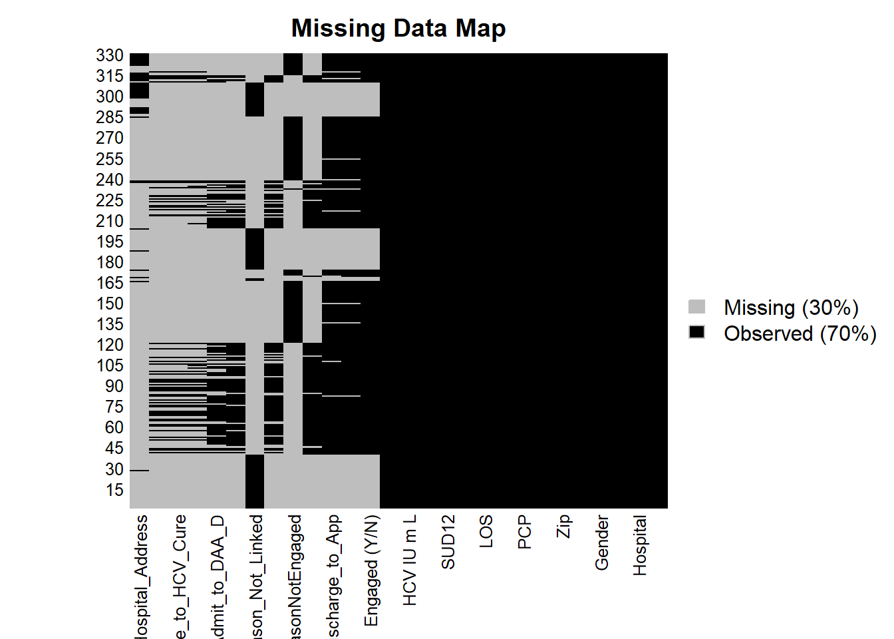
#Age at HCV Testing
ggplot(HCV_LINKAGE_DEC2025_ANALYSIS, aes(x = Age)) +
geom_histogram(binwidth = 5, fill = "steelblue", color = "black") +
labs(title = "Histogram of Age",
x = "Age",
y = "Count")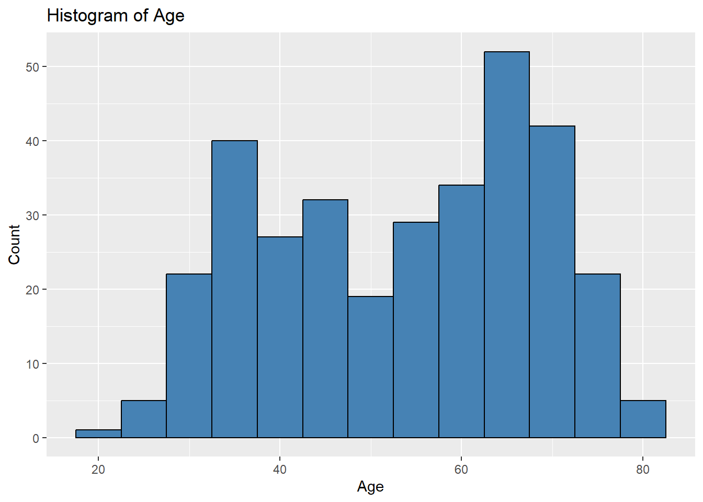
#Type of insurance
HCV_LINKAGE_DEC2025_ANALYSIS %>%
count(Insurance) %>%
mutate(Percent = round(n / sum(n) * 100, 1))# A tibble: 17 × 3
Insurance n Percent
<chr> <int> <dbl>
1 Commercial 31 9.4
2 LIFE 1 0.3
3 Life 1 0.3
4 Medcaid 4 1.2
5 Medcare 1 0.3
6 Medciad 1 0.3
7 Medciaid 2 0.6
8 Medicaid 151 45.8
9 Medicaire 1 0.3
10 Medicare 53 16.1
11 Medicare/Medicaid 42 12.7
12 Mediciad 1 0.3
13 Mediciaid 1 0.3
14 None 28 8.5
15 VA 1 0.3
16 medicaid 6 1.8
17 medicare 5 1.5#Manual entry of insurance type leading to misspellings
#Cleaning misspellings of Medicaid insurance
HCV_LINKAGE_DEC2025_ANALYSIS <- HCV_LINKAGE_DEC2025_ANALYSIS %>%
mutate(
Insurance = case_when(
Insurance %in% c(
"Medcaid", "Medciad", "Medciaid", "Mediciad", "Mediciaid",
"medicaid", "medicaid ", " medicaid"
) ~ "Medicaid",
TRUE ~ Insurance
)
)
#Cleaning misspellings of Medicare insurance
HCV_LINKAGE_DEC2025_ANALYSIS <- HCV_LINKAGE_DEC2025_ANALYSIS %>%
mutate(
Insurance = case_when(
Insurance %in% c(
"Medcard", "Medcaire", "medicare", "Medicaire", "Medcare"
) ~ "Medicare",
TRUE ~ Insurance
)
)
#Grouping other insurance into "Other" category
HCV_LINKAGE_DEC2025_ANALYSIS <- HCV_LINKAGE_DEC2025_ANALYSIS %>%
mutate(
Insurance = case_when(
Insurance %in% c(
"Commercial", "LIFE", "Life", "VA"
) ~ "Other",
TRUE ~ Insurance
)
)
HCV_LINKAGE_DEC2025_ANALYSIS %>%
count(Insurance) %>%
mutate(Percent = round(n / sum(n) * 100, 1))# A tibble: 5 × 3
Insurance n Percent
<chr> <int> <dbl>
1 Medicaid 166 50.3
2 Medicare 60 18.2
3 Medicare/Medicaid 42 12.7
4 None 28 8.5
5 Other 34 10.3#Cleaning Phone categories
HCV_LINKAGE_DEC2025_ANALYSIS %>%
mutate(
Phone = case_when(
Phone %in% c("Y", "y") ~ "Y",
Phone %in% c("N", "n") ~ "N",
TRUE ~ Phone
)
) %>%
count(Phone) %>%
mutate(Percent = round(n / sum(n) * 100, 1))# A tibble: 2 × 3
Phone n Percent
<chr> <int> <dbl>
1 N 54 16.4
2 Y 276 83.6#Location at Discharge
HCV_LINKAGE_DEC2025_ANALYSIS %>%
count(DC_Location) %>%
mutate(Percent = round(n / sum(n) * 100, 1))# A tibble: 7 × 3
DC_Location n Percent
<chr> <int> <dbl>
1 Died 11 3.3
2 Facility 80 24.2
3 Home 167 50.6
4 Hospice 5 1.5
5 Justice 5 1.5
6 PDD 50 15.2
7 Shelter 12 3.6#Housing Insecurity
HCV_LINKAGE_DEC2025_ANALYSIS %>%
count(Housing_Insec) %>%
mutate(Percent = round(n / sum(n) * 100, 1))# A tibble: 2 × 3
Housing_Insec n Percent
<chr> <int> <dbl>
1 N 177 53.6
2 Y 153 46.4#Listing location of discharge by Housing Insecurity
total_n <- nrow(HCV_LINKAGE_DEC2025_ANALYSIS)
HCV_LINKAGE_DEC2025_ANALYSIS %>%
count(Housing_Insec, DC_Location) %>%
mutate(
Percent_Total = round(n / total_n * 100, 1)
)# A tibble: 13 × 4
Housing_Insec DC_Location n Percent_Total
<chr> <chr> <int> <dbl>
1 N Died 9 2.7
2 N Facility 39 11.8
3 N Home 110 33.3
4 N Hospice 3 0.9
5 N Justice 3 0.9
6 N PDD 13 3.9
7 Y Died 2 0.6
8 Y Facility 41 12.4
9 Y Home 57 17.3
10 Y Hospice 2 0.6
11 Y Justice 2 0.6
12 Y PDD 37 11.2
13 Y Shelter 12 3.6#HCV viral load at testing
sort(HCV_LINKAGE_DEC2025_ANALYSIS$`HCV IU m L`, decreasing = FALSE) [1] "<15 detected" "100000" "1010000" "1020000" "1020000"
[6] "1030000" "10400000" "1050000" "1060000" "10600000"
[11] "10600000" "1070000" "11000" "1100000" "11100000"
[16] "1118000" "1120000" "11200000" "1140000" "115000"
[21] "1150000" "11600000" "118000" "11800000" "11900000"
[26] "12100" "1210000" "12100000" "1230000" "1240000"
[31] "1240000" "1250000" "126000" "126000" "1270000"
[36] "1290000" "1300000" "1300000" "13200000" "133"
[41] "1330000" "1340000" "1340000" "13500000" "1360000"
[46] "1360000" "138000" "139000" "1390000" "1410000"
[51] "1420000" "143" "143000" "14300000" "1450000"
[56] "1450000" "14700000" "1480000" "1490" "1490"
[61] "1500000" "15100000" "1520000" "1520000" "1560000"
[66] "15700" "1610000" "1620000" "1620000" "16300000"
[71] "1660000" "1660000" "167000" "167000" "1680000"
[76] "169000" "170" "17000000" "17200000" "173"
[81] "1780000" "17800000" "1790000" "1800000" "1800000"
[86] "1820000" "183000" "183000" "1840000" "1850000"
[91] "1850000" "186000" "186000" "1890000" "19"
[96] "1910000" "1930000" "1930000" "194000" "1950"
[101] "19500000" "199" "1990000" "200000" "2010"
[106] "201000" "201000" "2010000" "2010000" "203000"
[111] "2050000" "206000" "2090000" "2160000" "21600000"
[116] "218000" "222000" "2220000" "2220000" "2240000"
[121] "22500" "2300000" "2320000" "2340000" "237000"
[126] "2370000" "2420000" "2430000" "24300000" "2460000"
[131] "24700" "2490000" "250000" "251000" "2540000"
[136] "2550000" "2580000" "259000" "2590000" "261000"
[141] "263000" "26400" "2650000" "267000" "27"
[146] "2700000" "27100" "272000" "2720000" "2720000"
[151] "273000" "2730000" "27600000" "2770000" "2780000"
[156] "27800000" "2790000" "2790000" "28" "2820000"
[161] "2830" "29" "296000" "297000" "2970000"
[166] "2990000" "301000" "303000" "3070000" "313000"
[171] "3130000" "314000" "3160000" "3170000" "3240000"
[176] "3270000" "335" "3390000" "3500000" "35200"
[181] "35300" "3530000" "355000" "3550000" "3560000"
[186] "3600000" "3610000" "3610000" "36400000" "365"
[191] "36700" "3690000" "37" "370000" "37000000"
[196] "372000" "3770000" "37900000" "4010000" "4010000"
[201] "403000" "40600" "409000" "411000" "4170000"
[206] "418000" "4190000" "431000" "43500" "436000"
[211] "437000" "4370000" "4380000" "439000" "4540000"
[216] "458000" "4590000" "46100" "464000" "466000"
[221] "467000" "4720" "47300" "4740000" "478000"
[226] "4780000" "481000" "48400" "4850000" "4860"
[231] "491000" "4910000" "4910000" "4960000" "5030000"
[236] "5030000" "504000" "513000" "5130000" "515000"
[241] "52" "5200000" "522000" "5230" "5270000"
[246] "530000" "5300000" "5330000" "538000" "5420000"
[251] "55200" "5530000" "55700" "560000" "562000"
[256] "565000" "5820" "5820000" "5870000" "59100"
[261] "591000" "594000" "6050000" "611000" "6120000"
[266] "6220000" "632000" "6340000" "637000" "638000"
[271] "646000" "6500000" "654000" "662000" "662000"
[276] "6710000" "6770" "6880000" "6900" "6900000"
[281] "704000" "7080000" "717000" "7190" "736000"
[286] "74200" "74400" "7440000" "745000" "74600"
[291] "75400" "765" "7650000" "766000" "769000"
[296] "77200" "776000" "78800" "79300" "795000"
[301] "7960000" "7990000" "81200" "815000" "8190000"
[306] "823000" "8360000" "842000" "842000" "852000"
[311] "863" "866000" "8740000" "87800" "8810000"
[316] "904000" "9060000" "914000" "9170000" "9180000"
[321] "930000" "93300" "9410000" "9440000" "9460000"
[326] "9490000" "973000" "9790000" "9800000" "9840000" HCV_LINKAGE_DEC2025_ANALYSIS$`HCV IU m L` <-
as.numeric(HCV_LINKAGE_DEC2025_ANALYSIS$`HCV IU m L`)Warning: NAs introduced by coercion#Only one observation recorded as "<15 detected". Re-coding this variable as numeric 15 to allow for analysis of viral loads as numeric variable.
HCV_LINKAGE_DEC2025_ANALYSIS <- HCV_LINKAGE_DEC2025_ANALYSIS %>%
mutate(`HCV IU m L` = if_else(is.na(`HCV IU m L`), 15, `HCV IU m L`))
HCV_LINKAGE_DEC2025_ANALYSIS %>%
summarise(
mean_HCVRNA = mean(`HCV IU m L`, na.rm = TRUE),
median_HCVRNA = median(`HCV IU m L`, na.rm = TRUE),
min_HCVRNA = min(`HCV IU m L`, na.rm = TRUE),
max_HCVRNA = max(`HCV IU m L`, na.rm = TRUE),
range_HCVRNA = max(`HCV IU m L`, na.rm = TRUE) - min(Age, na.rm = TRUE),
IQR_HCVRNA = IQR(`HCV IU m L`, na.rm = TRUE),
IQR_25 = quantile(`HCV IU m L`, probs = 0.25, na.rm = TRUE),
IQR_75 = quantile(`HCV IU m L`, probs = 0.75, na.rm = TRUE)
)# A tibble: 1 × 8
mean_HCVRNA median_HCVRNA min_HCVRNA max_HCVRNA range_HCVRNA IQR_HCVRNA IQR_25
<dbl> <dbl> <dbl> <dbl> <dbl> <dbl> <dbl>
1 3245456. 1245000 15 37900000 37899978 3330500 259500
# ℹ 1 more variable: IQR_75 <dbl>#Cleaning PCP categories
HCV_LINKAGE_DEC2025_ANALYSIS %>%
mutate(
PCP = case_when(
PCP %in% c("Y", "y") ~ "Y",
PCP %in% c("N", "n") ~ "N",
TRUE ~ PCP
)
) %>%
count(PCP) %>%
mutate(Percent = round(n / sum(n) * 100, 1))# A tibble: 2 × 3
PCP n Percent
<chr> <int> <dbl>
1 N 157 47.6
2 Y 173 52.4#HCV Diagnoses by Hospital
#Create summary table
hospital_data <- HCV_LINKAGE_DEC2025_ANALYSIS %>%
count(Hospital) %>%
mutate(Percent = round(n / sum(n) * 100, 1),
Label = paste0(Percent, "%"))
#Pie chart with percentage labels
ggplot(hospital_data, aes(x = "", y = n, fill = Hospital)) +
geom_bar(stat = "identity", width = 1) +
coord_polar("y") +
geom_text(aes(label = Label),
position = position_stack(vjust = 0.5), size = 6) +
labs(title = "Distribution of Hospital Categories",
fill = "Hospital") +
theme_void()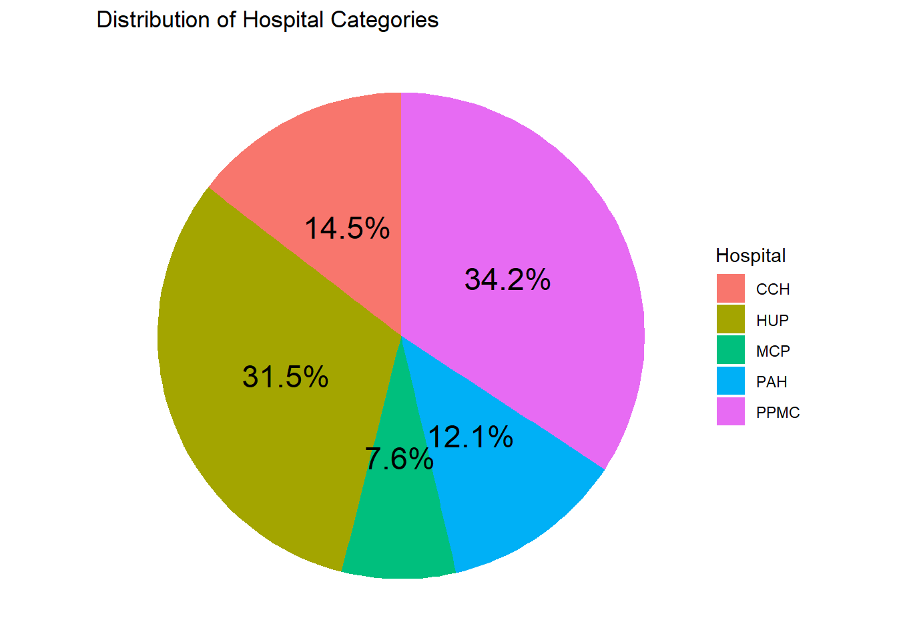
#For comparison, Number of Hospital Beds by Hospital
bed_data <- data.frame(
Hospital = c("CCH", "HUP", "MCP", "PAH", "PPMC"),
Beds = c(300, 1100, 500, 250, 300)
)
# Calculate percentages
bed_data$Percent <- round(bed_data$Beds / sum(bed_data$Beds) * 100, 1)
# Pie chart with labels
ggplot(bed_data, aes(x = "", y = Beds, fill = Hospital)) +
geom_bar(stat = "identity", width = 1) +
coord_polar("y") +
geom_text(aes(label = paste0(Percent, "%")),
position = position_stack(vjust = 0.5),
size = 6) +
labs(title = "Approximate Distribution of Hospital Beds") +
theme_void()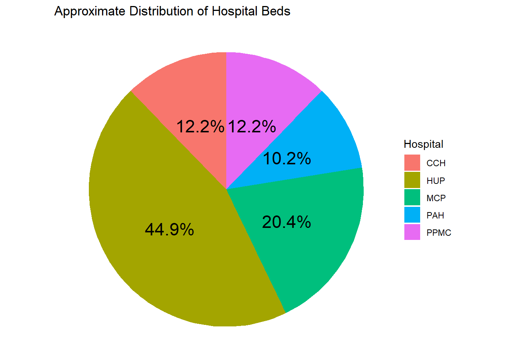
# Race and Ethnicity Counts and Percentages
HCV_LINKAGE_DEC2025_ANALYSIS %>%
count(Race_Ethnicity) %>%
mutate(Percent = round(n / sum(n) * 100, 1))# A tibble: 5 × 3
Race_Ethnicity n Percent
<chr> <int> <dbl>
1 Asian 2 0.6
2 Hispanic 9 2.7
3 NHB 116 35.2
4 NHW 175 53
5 Other/Unknown 28 8.5#Distribtion of Race and Ethnicity
ggplot(HCV_LINKAGE_DEC2025_ANALYSIS, aes(x = Race_Ethnicity)) +
geom_bar(fill = "steelblue") +
labs(
title = "Distribution of Race/Ethnicity",
x = "Race/Ethnicity",
y = "Count"
) +
theme(axis.text.x = element_text(angle = 45, hjust = 1))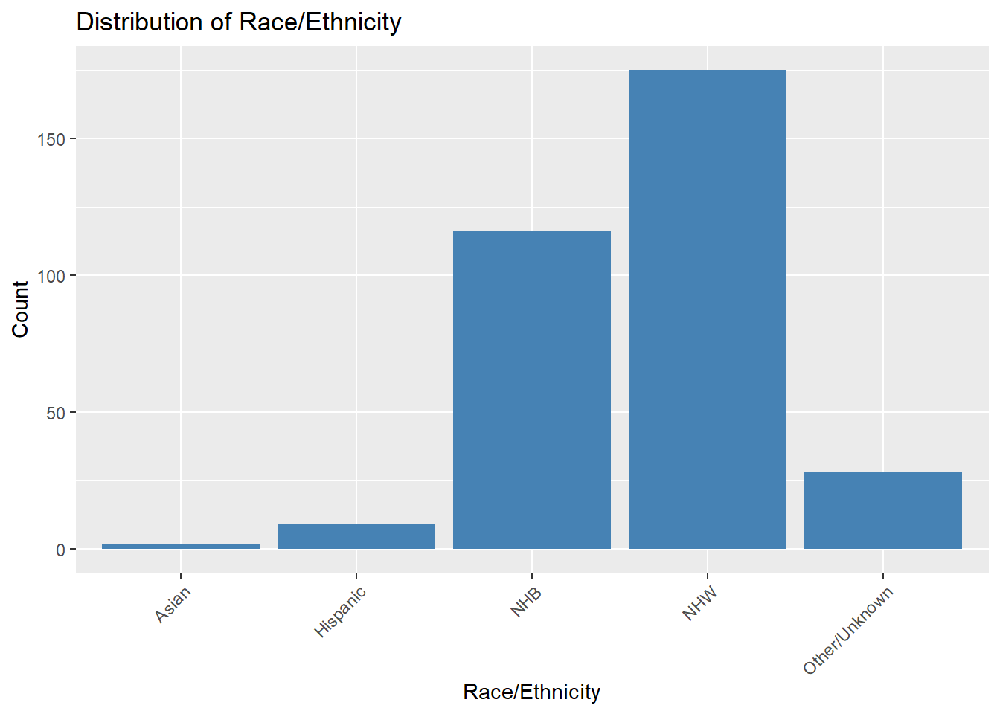
#Race/Ethnicity by Gender - Percentage of Total Sample
race_gender_data <- HCV_LINKAGE_DEC2025_ANALYSIS %>%
count(Gender, Race_Ethnicity) %>%
mutate(Percent = round(n / sum(n) * 100, 1))
# Bar chart with percent labels
ggplot(race_gender_data, aes(x = Race_Ethnicity, y = Percent, fill = Gender)) +
geom_bar(stat = "identity", position = "dodge") +
geom_text(aes(label = paste0(Percent, "%")),
position = position_dodge(width = 0.9),
vjust = -0.3,
size = 2.5) +
labs(title = "Race/Ethnicity Distribution by Gender",
x = "Race/Ethnicity",
y = "Percent",
fill = "Gender") +
theme_bw() +
theme(axis.text.x = element_text(angle = 45, hjust = 1))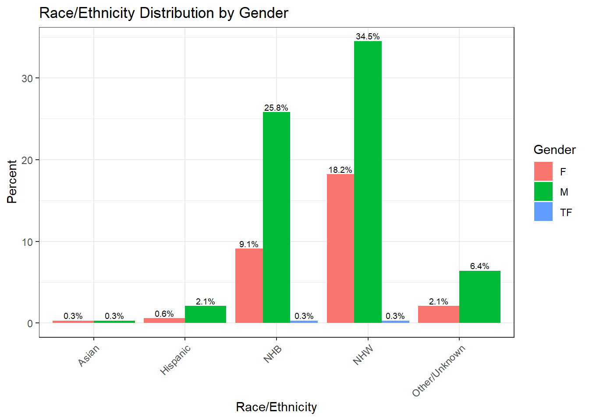
Calculating summary statistics
#Age at HCV Testing
HCV_LINKAGE_DEC2025_ANALYSIS %>%
summarise(
mean_age = mean(Age, na.rm = TRUE),
median_age = median(Age, na.rm = TRUE),
min_age = min(Age, na.rm = TRUE),
max_age = max(Age, na.rm = TRUE),
range_age = max(Age, na.rm = TRUE) - min(Age, na.rm = TRUE),
IQR_age = IQR(Age, na.rm = TRUE),
IQR_25 = quantile(Age, probs = 0.25, na.rm = TRUE),
IQR_75 = quantile(Age, probs = 0.75, na.rm = TRUE)
)# A tibble: 1 × 8
mean_age median_age min_age max_age range_age IQR_age IQR_25 IQR_75
<dbl> <dbl> <dbl> <dbl> <dbl> <dbl> <dbl> <dbl>
1 53.6 56 22 79 57 26.8 40 66.8ggplot(HCV_LINKAGE_DEC2025_ANALYSIS, aes(y = Age)) +
geom_boxplot(fill = "steelblue") +
labs(title = "Boxplot of Age",
y = "Age")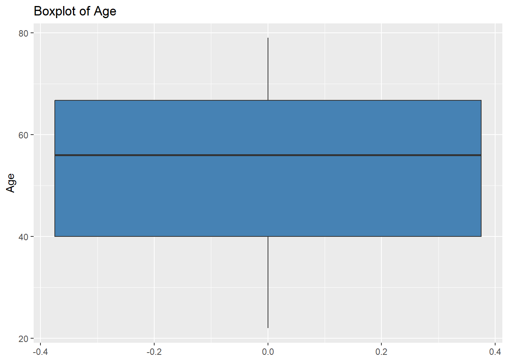
#Age distribution by Hospital
ggplot(HCV_LINKAGE_DEC2025_ANALYSIS, aes(x = Hospital, y = Age, fill = Hospital)) +
geom_boxplot() +
labs(title = "Boxplot of Age by Hospital",
x = "Hospital",
y = "Age") +
theme_bw() +
theme(axis.text.x = element_text(angle = 45, hjust = 1))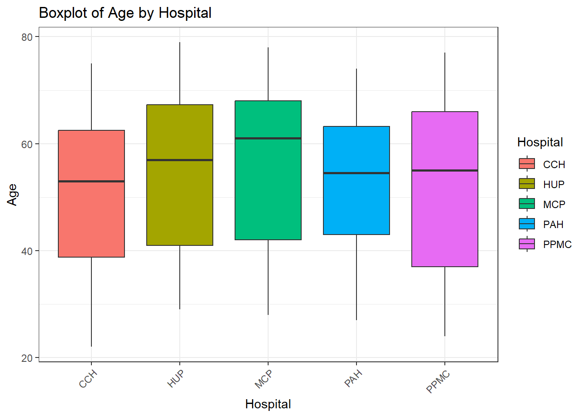
#Hospital Length of Stay
HCV_LINKAGE_DEC2025_ANALYSIS %>%
summarise(
mean_LOS = mean(LOS, na.rm = TRUE),
median_LOS = median(LOS, na.rm = TRUE),
min_LOS = min(LOS, na.rm = TRUE),
max_LOS = max(LOS, na.rm = TRUE),
range_LOS = max(LOS, na.rm = TRUE) - min(LOS, na.rm = TRUE),
IQR_LOS = IQR(LOS, na.rm = TRUE),
IQR_25 = quantile(LOS, probs = 0.25, na.rm = TRUE),
IQR_75 = quantile(LOS, probs = 0.75, na.rm = TRUE)
)# A tibble: 1 × 8
mean_LOS median_LOS min_LOS max_LOS range_LOS IQR_LOS IQR_25 IQR_75
<dbl> <dbl> <dbl> <dbl> <dbl> <dbl> <dbl> <dbl>
1 8.35 5 1 122 121 7 3 10ggplot(HCV_LINKAGE_DEC2025_ANALYSIS, aes(x = LOS)) +
geom_histogram(binwidth = 1, fill = "steelblue", color = "black") +
labs(title = "Histogram of Length of Stay (LOS)",
x = "LOS",
y = "Count")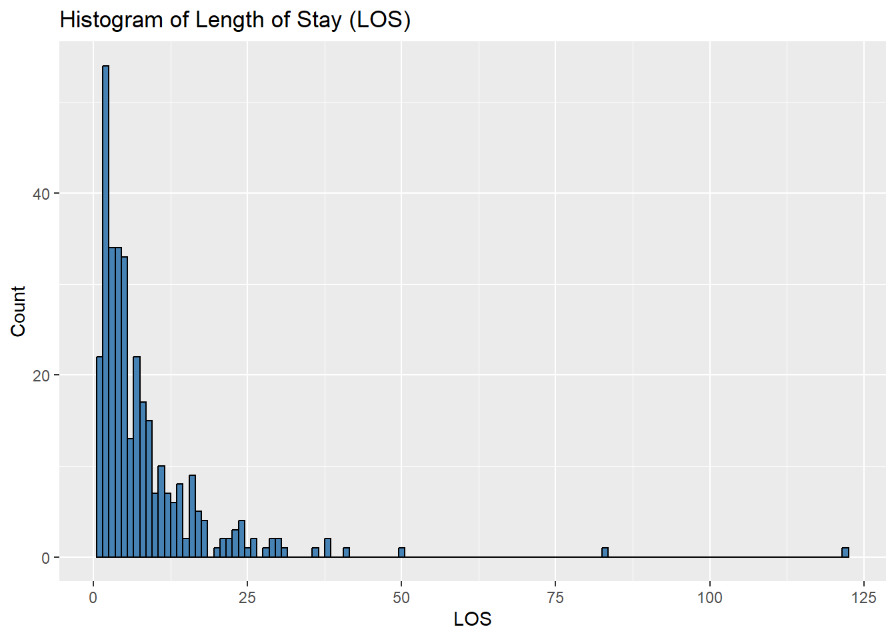
HCV Care Cascade
Create HCV care cascade with steps including 1) total number of patients with HCV viremia, 2) number of patients with HCV viremia linked to a HCV_treating provider, 3) number of patients with HCV viremia engaged in care, 4) number of patients with HCV viremia starting on DAAs, and 5) number of patients with HCV viremia who subsequently achieve HCV cure. HCV cure is defined by sustained virologic response >= 12 weeks (SVR12) after completing DAA course.
# Total N for denominator
total_n <- nrow(HCV_LINKAGE_DEC2025_ANALYSIS)
#Create binary variable for starting DAAs
HCV_LINKAGE_DEC2025_ANALYSIS <- HCV_LINKAGE_DEC2025_ANALYSIS %>%
mutate(`Started DAAs` = if_else(!is.na(DAA), "Y", "N"))
#Build cascade data
cascade <- tibble(
Stage = c("Total", "Linked to Care", "Engaged in Care", "Started DAAs", "Confirmed SVR12"),
Count = c(
total_n,
sum(HCV_LINKAGE_DEC2025_ANALYSIS$`Linked (Y/N)` == "Y", na.rm = TRUE),
sum(HCV_LINKAGE_DEC2025_ANALYSIS$`Engaged (Y/N)` == "Y", na.rm = TRUE),
sum(HCV_LINKAGE_DEC2025_ANALYSIS$`Started DAAs` == "Y", na.rm = TRUE),
sum(HCV_LINKAGE_DEC2025_ANALYSIS$`SVR12 (Y/N)` == "Y", na.rm = TRUE)
)
) %>%
mutate(
Percent = round((Count / total_n) * 100, 1),
Label = paste0(Count, " (", Percent, "%)"),
Stage = factor(Stage, levels = c("Total", "Linked to Care", "Engaged in Care", "Started DAAs", "Confirmed SVR12"))
)
#Plot cascade
ggplot(cascade, aes(x = Stage, y = Count)) +
geom_bar(stat = "identity", fill = "steelblue") +
geom_text(aes(label = Label), vjust = -0.5, size = 4) +
labs(title = "HCV Care Cascade",
x = "Cascade Stage",
y = "Number of Patients") +
ylim(0, max(cascade$Count) * 1.15) +
theme_bw() +
theme(axis.text.x = element_text(angle = 45, hjust = 1))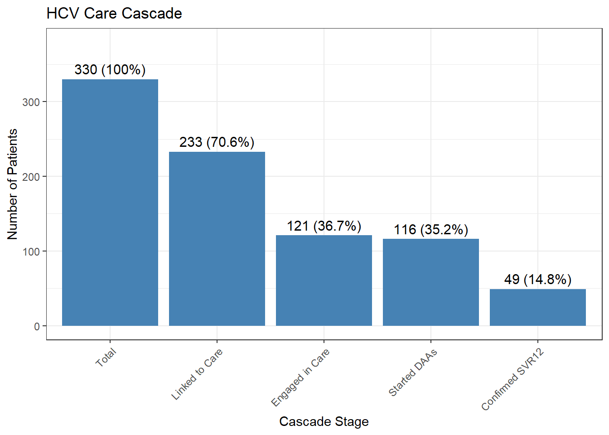
Not all patients identified with HCV viremia during hospitalization will be clinically appopriate candidates for HCV treatment. It is worth noting that patients present to the hospital with acute illness, which may rapidly lead life-limiting diagnosis. Given HCV is predominantly a chronic viral infection, people with life expectancy <12 months are not expected to benefit from HCV cure. As such, patients with limited life expectancy are not appropriate for HCV linkage. Presenting the HCV care cascade including all patients, including those with limited life expectancy, would capture those patients who would not benefit from moving through the cascade steps.
To identify gaps along the HCV care cascade among people who would benefit from HCV treatment, the following analysis will be limited to those patients appopriate for linkage to HCV treatment.
#Limiting Care Cascade to Patients Clinically Appropriate for Treatment (Life Expectancy >12 months)
HCV_LINKAGE_DEC2025_ANALYSIS %>%
count(Reason_Not_Linked) %>%
mutate(Percent = round(n / sum(n) * 100, 1))# A tibble: 6 × 3
Reason_Not_Linked n Percent
<chr> <int> <dbl>
1 Declined 5 1.5
2 Deferred 3 0.9
3 Died 1 0.3
4 LTC 58 17.6
5 Life Expectancy 29 8.8
6 <NA> 234 70.9# Filter out Life Expectancy exclusions
filtered_data <- HCV_LINKAGE_DEC2025_ANALYSIS %>%
filter(`Reason_Not_Linked` != "Life Expectancy" | is.na(`Reason_Not_Linked`))
# Total N after filtering
total_n <- nrow(filtered_data)
# Create Started DAAs indicator in filtered dataset
filtered_data <- filtered_data %>%
mutate(`Started DAAs` = if_else(!is.na(DAA), "Y", "N"))
cascade <- tibble(
Stage = c("Total", "Linked to Care", "Engaged in Care", "Started DAAs", "Confirmed SVR12"),
Count = c(
total_n,
sum(HCV_LINKAGE_DEC2025_ANALYSIS$`Linked (Y/N)` == "Y", na.rm = TRUE),
sum(HCV_LINKAGE_DEC2025_ANALYSIS$`Engaged (Y/N)` == "Y", na.rm = TRUE),
sum(HCV_LINKAGE_DEC2025_ANALYSIS$`Started DAAs` == "Y", na.rm = TRUE),
sum(HCV_LINKAGE_DEC2025_ANALYSIS$`SVR12 (Y/N)` == "Y", na.rm = TRUE)
)
) %>%
mutate(
Percent = round((Count / total_n) * 100, 1),
Label = paste0(Count, " (", Percent, "%)"),
Stage = factor(Stage, levels = c("Total", "Linked to Care", "Engaged in Care", "Started DAAs", "Confirmed SVR12"))
)
# Plot cascade
ggplot(cascade, aes(x = Stage, y = Count)) +
geom_bar(stat = "identity", fill = "steelblue") +
geom_text(aes(label = Label), vjust = -0.5, size = 4) +
labs(title = "HCV Care Cascade",
x = "Cascade Stage",
y = "Number of Patients") +
ylim(0, max(cascade$Count) * 1.15) +
theme_bw() +
theme(axis.text.x = element_text(angle = 45, hjust = 1))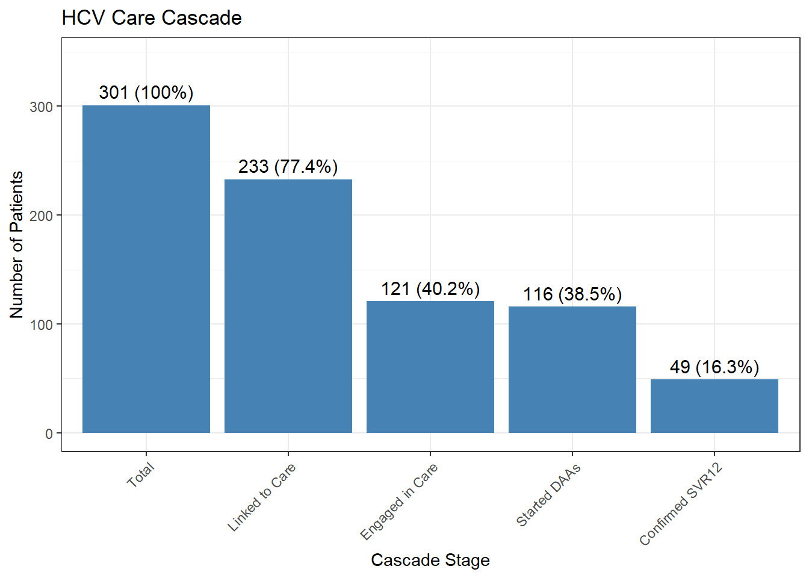
#Limiting to patients appropriate for linkage (excludes people with limited life expectancy)
HCV_LINKAGE_DEC2025_ANALYSIS <- HCV_LINKAGE_DEC2025_ANALYSIS %>%
mutate(Appropriate_for_Linkage = if_else(
is.na(Reason_Not_Linked) | Reason_Not_Linked != "Life Expectancy",
"Y",
"N"
))
HCV_LINKAGE_DEC2025_ANALYSIS %>%
filter(Appropriate_for_Linkage == "Y") %>%
count(Housing_Insec) %>%
mutate(Percent = round(n / sum(n) * 100, 1))# A tibble: 2 × 3
Housing_Insec n Percent
<chr> <int> <dbl>
1 N 154 51.2
2 Y 147 48.8#Create table of baseline characteristics for all patients with HCV viremia
library(dplyr)
library(gtsummary)
#Cleaning Phone categories
HCV_LINKAGE_DEC2025_ANALYSIS %>%
mutate(
Phone = case_when(
Phone %in% c("Y", "y") ~ "Y",
Phone %in% c("N", "n") ~ "N",
TRUE ~ Phone
)
) %>%
count(Phone) %>%
mutate(Percent = round(n / sum(n) * 100, 1))# A tibble: 2 × 3
Phone n Percent
<chr> <int> <dbl>
1 N 54 16.4
2 Y 276 83.6tbl_all <- HCV_LINKAGE_DEC2025_ANALYSIS %>%
dplyr::select(
-Appropriate_for_Linkage,
-Zip,
-`HCV IU m L`,
-STUDY_ID,
-Hospital_Address
) %>%
tbl_summary(
type = list(where(is.numeric) ~ "continuous2"),
statistic = list(
all_continuous() ~ c("{mean} ({sd})", "{median} [{p25}, {p75}]"),
all_categorical() ~ "{n} ({p}%)"
),
missing = "ifany"
) %>%
add_n() %>%
bold_labels()
tbl_all %>%
as_gt()| Characteristic | N | N = 3301 |
|---|---|---|
| Hospital | 330 | |
| CCH | 48 (15%) | |
| HUP | 104 (32%) | |
| MCP | 25 (7.6%) | |
| PAH | 40 (12%) | |
| PPMC | 113 (34%) | |
| Age | 330 | |
| Mean (SD) | 54 (15) | |
| Median [Q1, Q3] | 56 [40, 67] | |
| Gender | 330 | |
| F | 100 (30%) | |
| M | 228 (69%) | |
| TF | 2 (0.6%) | |
| Race_Ethnicity | 330 | |
| Asian | 2 (0.6%) | |
| Hispanic | 9 (2.7%) | |
| NHB | 116 (35%) | |
| NHW | 175 (53%) | |
| Other/Unknown | 28 (8.5%) | |
| Insurance | 330 | |
| Medicaid | 166 (50%) | |
| Medicare | 60 (18%) | |
| Medicare/Medicaid | 42 (13%) | |
| None | 28 (8.5%) | |
| Other | 34 (10%) | |
| PCP | 330 | |
| N | 157 (48%) | |
| Y | 173 (52%) | |
| Phone | 330 | |
| N | 54 (16%) | |
| Y | 276 (84%) | |
| LOS | 330 | |
| Mean (SD) | 8 (11) | |
| Median [Q1, Q3] | 5 [3, 10] | |
| DC_Location | 330 | |
| Died | 11 (3.3%) | |
| Facility | 80 (24%) | |
| Home | 167 (51%) | |
| Hospice | 5 (1.5%) | |
| Justice | 5 (1.5%) | |
| PDD | 50 (15%) | |
| Shelter | 12 (3.6%) | |
| SUD12 | 330 | |
| N | 143 (43%) | |
| Y | 187 (57%) | |
| Housing_Insec | 330 | |
| N | 177 (54%) | |
| Y | 153 (46%) | |
| Linked (Y/N) | 330 | |
| N | 97 (29%) | |
| Y | 233 (71%) | |
| Reason_Not_Linked | 96 | |
| Declined | 5 (5.2%) | |
| Deferred | 3 (3.1%) | |
| Died | 1 (1.0%) | |
| Life Expectancy | 29 (30%) | |
| LTC | 58 (60%) | |
| Unknown | 234 | |
| Admit_to_Appt_D | 224 | |
| Mean (SD) | 42 (47) | |
| Median [Q1, Q3] | 29 [17, 47] | |
| Unknown | 106 | |
| Discharge_to_App | 222 | |
| Mean (SD) | 33 (47) | |
| Median [Q1, Q3] | 21 [11, 38] | |
| Unknown | 108 | |
| Engaged (Y/N) | 233 | |
| N | 112 (48%) | |
| Y | 121 (52%) | |
| Unknown | 97 | |
| ReasonNotEngaged | 112 | |
| Cleared | 2 (1.8%) | |
| Died | 8 (7.1%) | |
| Justice | 2 (1.8%) | |
| LTC | 100 (89%) | |
| Unknown | 218 | |
| DAA | 116 | |
| E | 52 (45%) | |
| LTC | 13 (11%) | |
| M | 48 (41%) | |
| NOS | 2 (1.7%) | |
| Z | 1 (0.9%) | |
| Unknown | 214 | |
| Pharmacy | 95 | |
| OSH | 23 (24%) | |
| PCAM | 23 (24%) | |
| PPA | 46 (48%) | |
| VA | 3 (3.2%) | |
| Unknown | 235 | |
| Admit_to_DAA_D | 86 | |
| Mean (SD) | 99 (83) | |
| Median [Q1, Q3] | 64 [43, 131] | |
| Unknown | 244 | |
| DAA_Complete_(Y/N) | 97 | |
| LTC | 20 (21%) | |
| N | 14 (14%) | |
| Y | 63 (65%) | |
| Unknown | 233 | |
| SVR12 (Y/N) | 53 | |
| N | 4 (7.5%) | |
| Y | 49 (92%) | |
| Unknown | 277 | |
| Time_to_HCV_Cure | 49 | |
| Mean (SD) | 298 (132) | |
| Median [Q1, Q3] | 268 [226, 370] | |
| Unknown | 281 | |
| DAAStartToCureConfirm | 49 | |
| Mean (SD) | 211 (110) | |
| Median [Q1, Q3] | 179 [167, 233] | |
| Unknown | 281 | |
| Started DAAs | 330 | |
| N | 214 (65%) | |
| Y | 116 (35%) | |
| 1 n (%) | ||
#Quantifying reasons patients were not linked to care
# Create summary table, removing NA values
reason_data <- HCV_LINKAGE_DEC2025_ANALYSIS %>%
filter(!is.na(Reason_Not_Linked)) %>% # omit NA
count(Reason_Not_Linked) %>%
mutate(
Percent = round(n / sum(n) * 100, 1),
Label = paste0(n, " (", Percent, "%)")
)
# Pie chart - removing "NA" observations in Reason_Not_Linked as "NA" observations occur only for patients linked to care
ggplot(reason_data, aes(x = "", y = n, fill = Reason_Not_Linked)) +
geom_bar(stat = "identity", width = 1) +
coord_polar("y") +
geom_text(aes(label = Label),
position = position_stack(vjust = 0.5),
size = 4) +
labs(title = "Reasons for Not Being Linked to Care",
fill = "Reason Not Linked") +
theme_void()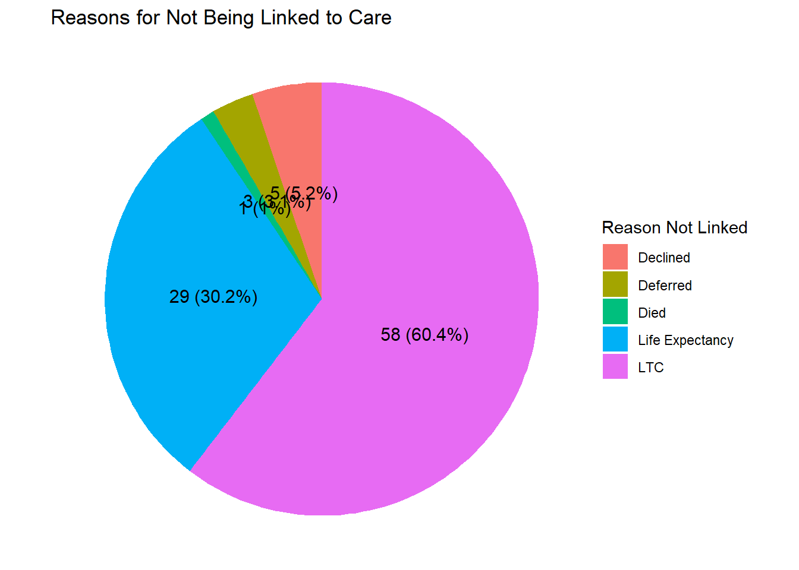
The first gap along the care cascade is failure to link a patient with HCV viremia to care. While the Hepatitis Linkage Team will follow up with patients both during and after hospital discharge to attempt to link patients to an HCV treating provider, the team will stop after >=3 outreach attempts have been made, ideally via >=3 different modalities. For example, a patient discharge from the hospital may be contacted by the Hepatitis Linkage Team via phone call, MyPennMedicine message, generic text message, letter sent to mailing address, call to listed Emergency Contact, or outreach to known outpatient clinical provider for continuity of care. Generally, the Hepatitis Linkage Team will exhaust all points of potential contact before recording a patient as “lost to care”; however, not all patients have these points of contact recorded.
#Exploring how reasons not linked vary by discharge location
# Filter out NA and "Life Expectancy" because these patients are linked (if value = NA) or patients are not clinically appropriate for linkage given their life expectancy is <12 months.
filtered_data <- HCV_LINKAGE_DEC2025_ANALYSIS %>%
filter(!is.na(Reason_Not_Linked),
Reason_Not_Linked != "Life Expectancy")
# Create counts for labeling
reason_counts <- filtered_data %>%
count(Reason_Not_Linked, DC_Location)
ggplot(reason_counts,
aes(x = Reason_Not_Linked, y = n, fill = DC_Location)) +
geom_bar(stat = "identity", position = position_dodge(width = 0.9)) +
geom_text(aes(label = n),
position = position_dodge(width = 0.9),
vjust = -0.3,
size = 4) +
labs(title = "Reasons for Not Being Linked by Discharge Location",
x = "Reason Not Linked",
y = "Count",
fill = "DC Location") +
theme_bw() +
theme(axis.text.x = element_text(angle = 45, hjust = 1))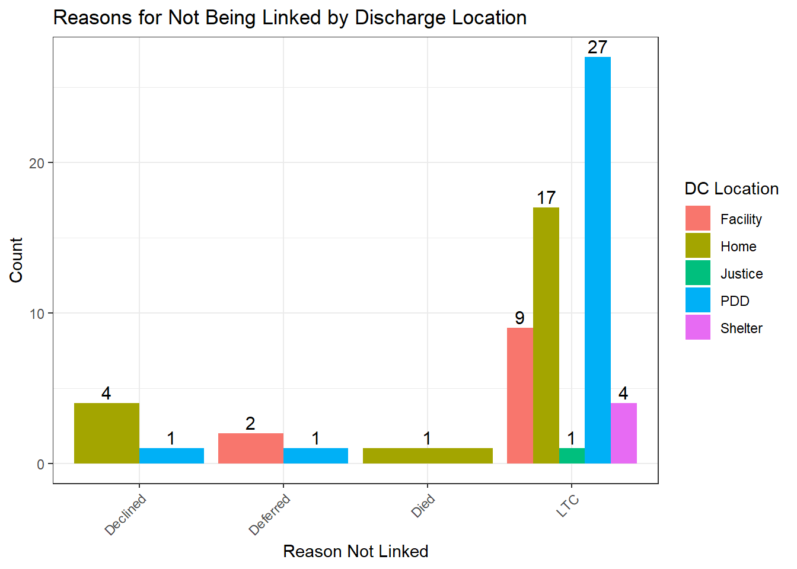
Baseline Characteristics of Patients Appropriate for Linkage to HCV Care
Generating a Table 1 for Baseline Demographics and Clinical Characteristics.
HCV_LINKAGE_DEC2025_ANALYSIS <- HCV_LINKAGE_DEC2025_ANALYSIS %>%
mutate(`Engaged (Y/N)` = if_else(`Linked (Y/N)` == "N", NA_character_, `Engaged (Y/N)`))
table(
HCV_LINKAGE_DEC2025_ANALYSIS$`Linked (Y/N)`,
HCV_LINKAGE_DEC2025_ANALYSIS$`Engaged (Y/N)`
)
N Y
N 0 0
Y 112 121HCV_LINKAGE_DEC2025_ANALYSIS <- HCV_LINKAGE_DEC2025_ANALYSIS %>%
mutate(`Engaged (Y/N)` = if_else(
`Linked (Y/N)` == "Y" & is.na(`Engaged (Y/N)`),
"N",
`Engaged (Y/N)`
))
HCV_LINKAGE_DEC2025_ANALYSIS <- HCV_LINKAGE_DEC2025_ANALYSIS %>%
mutate(ReasonNotEngaged = if_else(
`Engaged (Y/N)` == "Y",
NA_character_,
ReasonNotEngaged
))
#Generating a Table 1: Baseline Characteristics of Patients with HCV Virema Appropriate for Linkage to Care.
#keep only appropriate cases
#EXCLUDE zip code, HCV viral load value, study ID and hospital address variable
library(dplyr)
library(gtsummary)
tbl_appropriate <- HCV_LINKAGE_DEC2025_ANALYSIS %>%
filter(Appropriate_for_Linkage == "Y") %>%
dplyr::select( # <-- FIXED HERE
-Appropriate_for_Linkage,
-Zip,
-`HCV IU m L`,
-STUDY_ID,
-Hospital_Address
) %>%
tbl_summary(
type = list(where(is.numeric) ~ "continuous2"),
statistic = list(
all_continuous() ~ c("{mean} ({sd})", "{median} [{p25}, {p75}]"),
all_categorical() ~ "{n} ({p}%)"
),
missing = "ifany"
) %>%
add_n() %>%
bold_labels()
tbl_appropriate %>%
as_gt()| Characteristic | N | N = 3011 |
|---|---|---|
| Hospital | 301 | |
| CCH | 47 (16%) | |
| HUP | 90 (30%) | |
| MCP | 23 (7.6%) | |
| PAH | 37 (12%) | |
| PPMC | 104 (35%) | |
| Age | 301 | |
| Mean (SD) | 53 (14) | |
| Median [Q1, Q3] | 55 [39, 66] | |
| Gender | 301 | |
| F | 91 (30%) | |
| M | 208 (69%) | |
| TF | 2 (0.7%) | |
| Race_Ethnicity | 301 | |
| Asian | 2 (0.7%) | |
| Hispanic | 9 (3.0%) | |
| NHB | 100 (33%) | |
| NHW | 168 (56%) | |
| Other/Unknown | 22 (7.3%) | |
| Insurance | 301 | |
| Medicaid | 157 (52%) | |
| Medicare | 51 (17%) | |
| Medicare/Medicaid | 37 (12%) | |
| None | 24 (8.0%) | |
| Other | 32 (11%) | |
| PCP | 301 | |
| N | 145 (48%) | |
| Y | 156 (52%) | |
| Phone | 301 | |
| N | 49 (16%) | |
| Y | 252 (84%) | |
| LOS | 301 | |
| Mean (SD) | 8 (11) | |
| Median [Q1, Q3] | 5 [3, 9] | |
| DC_Location | 301 | |
| Facility | 74 (25%) | |
| Home | 160 (53%) | |
| Justice | 5 (1.7%) | |
| PDD | 50 (17%) | |
| Shelter | 12 (4.0%) | |
| SUD12 | 301 | |
| N | 126 (42%) | |
| Y | 175 (58%) | |
| Housing_Insec | 301 | |
| N | 154 (51%) | |
| Y | 147 (49%) | |
| Linked (Y/N) | 301 | |
| N | 68 (23%) | |
| Y | 233 (77%) | |
| Reason_Not_Linked | 67 | |
| Declined | 5 (7.5%) | |
| Deferred | 3 (4.5%) | |
| Died | 1 (1.5%) | |
| LTC | 58 (87%) | |
| Unknown | 234 | |
| Admit_to_Appt_D | 224 | |
| Mean (SD) | 42 (47) | |
| Median [Q1, Q3] | 29 [17, 47] | |
| Unknown | 77 | |
| Discharge_to_App | 222 | |
| Mean (SD) | 33 (47) | |
| Median [Q1, Q3] | 21 [11, 38] | |
| Unknown | 79 | |
| Engaged (Y/N) | 233 | |
| N | 112 (48%) | |
| Y | 121 (52%) | |
| Unknown | 68 | |
| ReasonNotEngaged | 112 | |
| Cleared | 2 (1.8%) | |
| Died | 8 (7.1%) | |
| Justice | 2 (1.8%) | |
| LTC | 100 (89%) | |
| Unknown | 189 | |
| DAA | 116 | |
| E | 52 (45%) | |
| LTC | 13 (11%) | |
| M | 48 (41%) | |
| NOS | 2 (1.7%) | |
| Z | 1 (0.9%) | |
| Unknown | 185 | |
| Pharmacy | 95 | |
| OSH | 23 (24%) | |
| PCAM | 23 (24%) | |
| PPA | 46 (48%) | |
| VA | 3 (3.2%) | |
| Unknown | 206 | |
| Admit_to_DAA_D | 86 | |
| Mean (SD) | 99 (83) | |
| Median [Q1, Q3] | 64 [43, 131] | |
| Unknown | 215 | |
| DAA_Complete_(Y/N) | 97 | |
| LTC | 20 (21%) | |
| N | 14 (14%) | |
| Y | 63 (65%) | |
| Unknown | 204 | |
| SVR12 (Y/N) | 53 | |
| N | 4 (7.5%) | |
| Y | 49 (92%) | |
| Unknown | 248 | |
| Time_to_HCV_Cure | 49 | |
| Mean (SD) | 298 (132) | |
| Median [Q1, Q3] | 268 [226, 370] | |
| Unknown | 252 | |
| DAAStartToCureConfirm | 49 | |
| Mean (SD) | 211 (110) | |
| Median [Q1, Q3] | 179 [167, 233] | |
| Unknown | 252 | |
| Started DAAs | 301 | |
| N | 185 (61%) | |
| Y | 116 (39%) | |
| 1 n (%) | ||
Mapping HCV Viremia By Zip Code
Mapping counts of patients with HCV viremia may allow the Hepatitis Linkage Team to focus outreach efforts with community partners by mapping areas with higher counts of patients.
Mapping by zip code limited as patients with “Hospital_Address” != “NA” identifies patients who have the admitting hospital address or outpatient clinic listed as their mailing address. This occurs when patients are un-housed and/or present as a trauma and elope from the hospital before accurate contact information can be obtained. The zip codes included in this dataset can identify where patients are accessing care; however, the zip code map may not accurately reflect the area of patient residence.
# Save map as PDF
pdf("HCV_Linkage_ZIP_Map.pdf", width = 8, height = 6)
#Create dataset to map (all patients included - not just those appropriate for linkage)
df <- HCV_LINKAGE_DEC2025_ANALYSIS
#Restrict to states of interest - this excludes patients listing address as remote state (ex. Florida)
states_keep <- c("PA", "NJ", "DE", "MD")
# ZIP metadata from zipcodeR
zip_meta <- zipcodeR::zip_code_db %>%
filter(state %in% states_keep)
# Count ZIPs in your data - mapping by counts of patients within each zip code
zip_counts <- df %>%
filter(!is.na(Zip)) %>%
count(Zip, name = "Count")
# Merge ZIP counts with geolocation info
zip_map <- zip_counts %>%
left_join(zip_meta, by = c("Zip" = "zipcode")) %>%
drop_na(lat, lng)
# Plot map of the four states only
map("state",
regions = c("pennsylvania", "new jersey", "delaware", "maryland"),
fill = TRUE, col = "gray90", bg = "white")
points(zip_map$lng, zip_map$lat,
pch = 21, bg = "red", col = "black",
cex = scales::rescale(zip_map$Count, to = c(0.5, 4)))
title("Number of Patients with HCV Viremia by ZIP Code (PA/NJ/DE/MD)")
dev.off() png
2 
Logistic Regression Model
Developing model to evaluate associations between baseline variables and outcome of interest. Given the largest clinically significant gap is between patient linkage and care engagement, the model outcome is “Engaged (Y/N)” to identify factors associated with successful care engagement. Factors negatively associated with HCV care engagement can inform future strategies and interventions to effectively target these factors for the purposes of improved care engagement.
- Models are limited to only patients linked to HCV care (i.e., Linked (Y/N) = Y) as patients cannot be engaged in care if they are not first linked to care.
#Limiting analysis to people who have been linked to care
HCV_LINKAGE_LINKED_ONLY <- HCV_LINKAGE_DEC2025_ANALYSIS %>%
filter(`Linked (Y/N)` == "Y")
#Dropping Gender=TF from analysis given only 2 observations - unable to draw conclusions with so few observations.
HCV_LINKAGE_LINKED_ONLY <- HCV_LINKAGE_LINKED_ONLY %>%
filter(Gender != "TF")
#Creating reference groups for each variable
HCV_LINKAGE_LINKED_ONLY$Gender <- relevel(factor(HCV_LINKAGE_LINKED_ONLY$Gender), ref = "M")
HCV_LINKAGE_LINKED_ONLY$Insurance <- relevel(factor(HCV_LINKAGE_LINKED_ONLY$Insurance), ref = "Medicaid")
HCV_LINKAGE_LINKED_ONLY$PCP <- relevel(factor(HCV_LINKAGE_LINKED_ONLY$PCP), ref = "Y")
HCV_LINKAGE_LINKED_ONLY$Phone <- relevel(factor(HCV_LINKAGE_LINKED_ONLY$Phone), ref = "Y")
HCV_LINKAGE_LINKED_ONLY$Hospital <- relevel(factor(HCV_LINKAGE_LINKED_ONLY$Hospital), ref = "PPMC")
HCV_LINKAGE_LINKED_ONLY$SUD12 <- relevel(factor(HCV_LINKAGE_LINKED_ONLY$SUD12), ref = "N")
HCV_LINKAGE_LINKED_ONLY$Housing_Insec <- relevel(factor(HCV_LINKAGE_LINKED_ONLY$Housing_Insec), ref = "N")
HCV_LINKAGE_LINKED_ONLY$DC_Location <- relevel(factor(HCV_LINKAGE_LINKED_ONLY$DC_Location), ref = "Home")
HCV_LINKAGE_LINKED_ONLY$Race_Ethnicity <- relevel(factor(HCV_LINKAGE_LINKED_ONLY$Race_Ethnicity), ref = "NHW")
#Cleaning PCP categories
HCV_LINKAGE_LINKED_ONLY %>%
mutate(
PCP = case_when(
PCP %in% c("Y", "y") ~ "Y",
PCP %in% c("N", "n") ~ "N",
TRUE ~ PCP
)
) %>%
count(PCP) %>%
mutate(Percent = round(n / sum(n) * 100, 1))# A tibble: 2 × 3
PCP n Percent
<chr> <int> <dbl>
1 N 102 44
2 Y 130 56#Cleaning Phone categories
HCV_LINKAGE_LINKED_ONLY %>%
mutate(
Phone = case_when(
Phone %in% c("Y", "y") ~ "Y",
Phone %in% c("N", "n") ~ "N",
TRUE ~ PCP
)
) %>%
count(Phone) %>%
mutate(Percent = round(n / sum(n) * 100, 1))# A tibble: 2 × 3
Phone n Percent
<chr> <int> <dbl>
1 N 26 11.2
2 Y 206 88.8#Visualizing associations between factors of interest and care engagement
#Engaged status by age
ggplot(HCV_LINKAGE_LINKED_ONLY, aes(x = `Engaged (Y/N)`, y = Age)) +
geom_boxplot(fill = "aquamarine") +
labs(
title = "Age by Engagement Status",
x = "Engaged (Y/N)",
y = "Age"
) +
theme_minimal()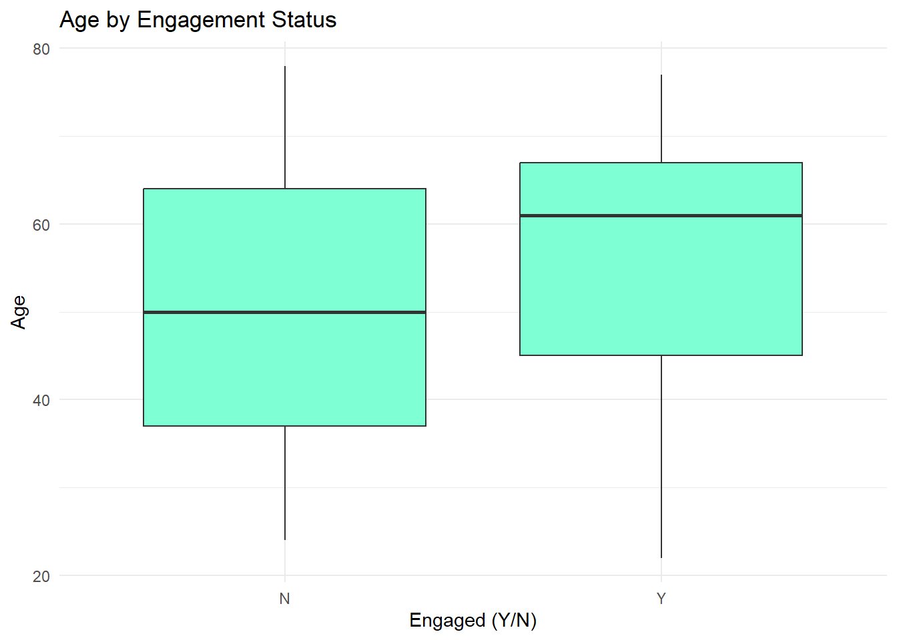
#Engaged by gender
ggplot(HCV_LINKAGE_LINKED_ONLY,
aes(x = Gender, fill = `Engaged (Y/N)`)) +
geom_bar(position = "dodge") +
labs(
title = "Engagement by Gender",
x = "Gender",
y = "Count",
fill = "Engaged"
) +
theme_minimal()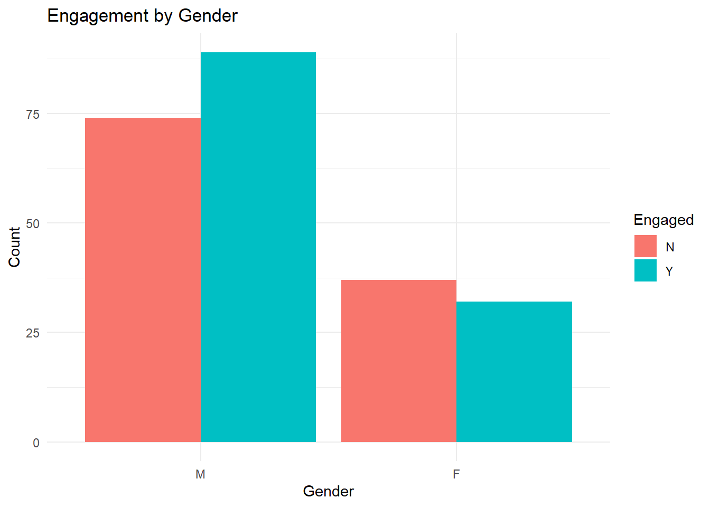
#Engagement by Race/Ethnicity
ggplot(HCV_LINKAGE_LINKED_ONLY,
aes(x = Race_Ethnicity, fill = `Engaged (Y/N)`)) +
geom_bar(position = "dodge") +
labs(
title = "Engagement by Race/Ethnicity",
x = "Race_Ethnicity",
y = "Count",
fill = "Engaged"
) +
theme_minimal()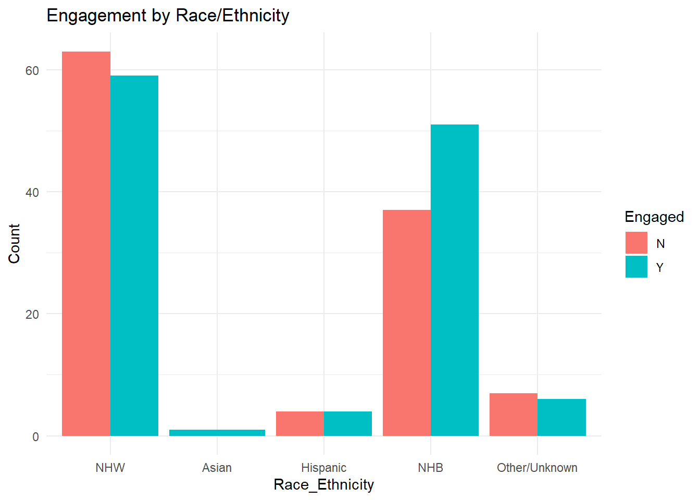
#Re-code Race_Ethnicity variable to for one combined "other" category due to small numbers in Asian and Hispanic group.
HCV_LINKAGE_LINKED_ONLY <- HCV_LINKAGE_LINKED_ONLY %>%
mutate(Race_Ethnicity = case_when(
Race_Ethnicity %in% c("Asian", "Hispanic", "Other/Unknown") ~ "Other",
TRUE ~ Race_Ethnicity
))
#Engagement by Race/Ethnicity
ggplot(HCV_LINKAGE_LINKED_ONLY,
aes(x = Race_Ethnicity, fill = `Engaged (Y/N)`)) +
geom_bar(position = "dodge") +
labs(
title = "Engagement by Race/Ethnicity",
x = "Race_Ethnicity",
y = "Count",
fill = "Engaged"
) +
theme_minimal()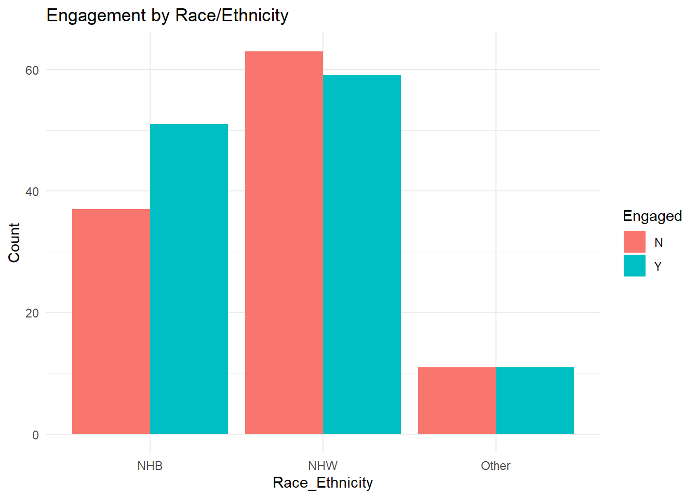
#Engaged by LOS
ggplot(HCV_LINKAGE_LINKED_ONLY, aes(x = `Engaged (Y/N)`, y = LOS)) +
geom_boxplot(fill = "orange") +
labs(
title = "LOS by Engagement Status",
x = "Engaged (Y/N)",
y = "LOS"
) +
theme_minimal()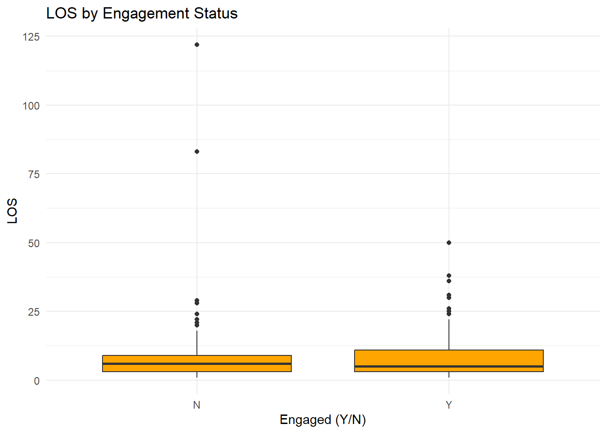
#Engaged by SUD12
ggplot(HCV_LINKAGE_LINKED_ONLY,
aes(x = SUD12, fill = `Engaged (Y/N)`)) +
geom_bar(position = "dodge") +
labs(
title = "Engagement by Active Substane Use Disorder",
x = "SUD12",
y = "Count",
fill = "Engaged"
) +
theme_minimal()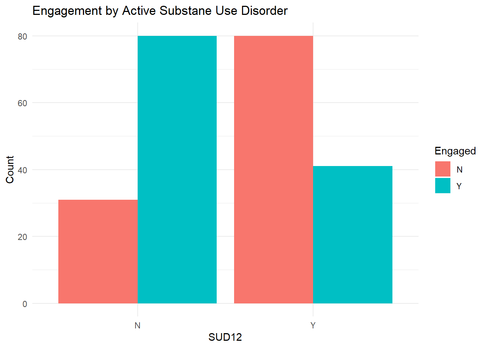
#Engaged by Housing Insecurity
ggplot(HCV_LINKAGE_LINKED_ONLY,
aes(x = Housing_Insec, fill = `Engaged (Y/N)`)) +
geom_bar(position = "dodge") +
labs(
title = "Engagement by Housing Insecruity",
x = "Housing_Insec",
y = "Count",
fill = "Engaged"
) +
theme_minimal()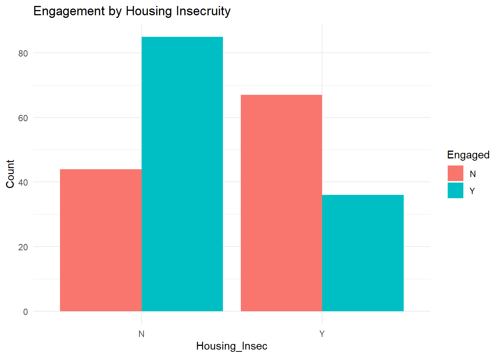
#Engaged by Location of Discharge
ggplot(HCV_LINKAGE_LINKED_ONLY,
aes(x = DC_Location, fill = `Engaged (Y/N)`)) +
geom_bar(position = "dodge") +
labs(
title = "Engagement by Discharge Location",
x = "DC_Location",
y = "Count",
fill = "Engaged"
) +
theme_minimal()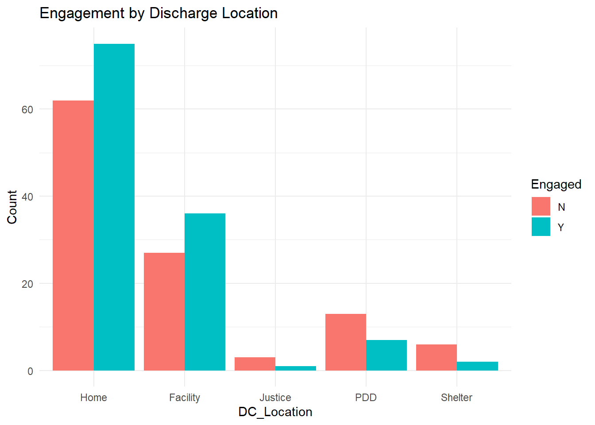
#Considering co-occurring/collinear processes: among people linked, how common does SUD12 and Housing Insecurity co-occur?
ggplot(HCV_LINKAGE_LINKED_ONLY,
aes(x = Housing_Insec, fill = SUD12)) +
geom_bar(position = "dodge") +
labs(
title = "Housing Insecurity by Active Substance Use Disorder",
x = "Housing_Insec",
y = "Count",
fill = "SUD12"
) +
theme_minimal()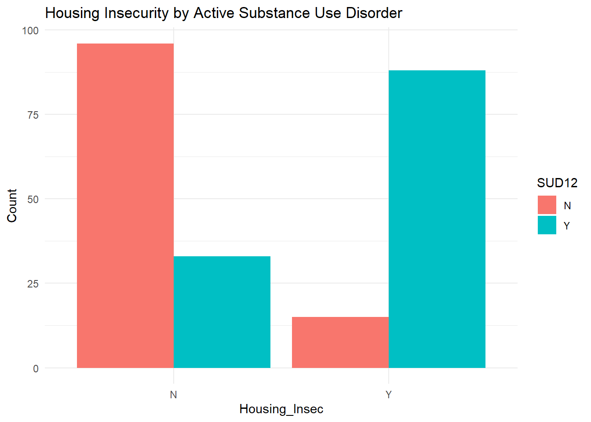
- Fitting univariate logistic regression models
#Work on the linked-only dataset
df <- HCV_LINKAGE_LINKED_ONLY
# Make sure outcome is Engaged (Y/N/) with "N" as reference --> OR >1 are factors associated with successful care engagement while OR < 1 are factors associated with unsuccessful care engagement.
df <- df %>%
mutate(`Engaged (Y/N)` = factor(`Engaged (Y/N)`, levels = c("N", "Y")))
# Defining covariate variable names of interest
cont_vars <- c("Age", "LOS")
cat_vars <- c("Race_Ethnicity", "Hospital", "Insurance", "DC_Location")
bin_vars <- c("Gender", "SUD12", "Phone", "PCP", "Housing_Insec")
# Code all categorical/binary predictors are factors
df <- df %>%
mutate(across(all_of(c(cat_vars, bin_vars)), factor))
# All exposures in one vector
exposures <- c(cont_vars, cat_vars, bin_vars)
# Code was not running with only uni_models <- map(... Fixed with using "purrr::map" in place of map. REMINDER: re-run library code if there are errors.
uni_models <- purrr::map(
exposures,
~ {
this_formula <- as.formula(paste0("`Engaged (Y/N)` ~ ", .x))
glm(
formula = this_formula,
data = df,
family = stats::binomial()
)
}
)
names(uni_models) <- exposures
# Presenting data in more interpretable format with ORs and 95% CIs.
uni_results <- purrr::map2_dfr(
uni_models,
exposures,
~ broom::tidy(.x) %>%
dplyr::filter(term != "(Intercept)") %>%
dplyr::mutate(
exposure = .y,
OR = exp(estimate),
CI_low = exp(estimate - 1.96 * std.error),
CI_high = exp(estimate + 1.96 * std.error)
)
)
uni_results# A tibble: 21 × 9
term estimate std.error statistic p.value exposure OR CI_low CI_high
<chr> <dbl> <dbl> <dbl> <dbl> <chr> <dbl> <dbl> <dbl>
1 Age 0.0284 0.00937 3.03 0.00241 Age 1.03 1.01 1.05
2 LOS -0.00341 0.0112 -0.305 0.760 LOS 0.997 0.975 1.02
3 Race_Ethn… -0.387 0.282 -1.37 0.170 Race_Et… 0.679 0.391 1.18
4 Race_Ethn… -0.321 0.478 -0.671 0.502 Race_Et… 0.725 0.284 1.85
5 HospitalC… -0.674 0.424 -1.59 0.111 Hospital 0.510 0.222 1.17
6 HospitalH… -0.0835 0.321 -0.260 0.795 Hospital 0.920 0.490 1.73
7 HospitalM… -0.518 0.524 -0.988 0.323 Hospital 0.596 0.213 1.66
8 HospitalP… -0.462 0.467 -0.990 0.322 Hospital 0.630 0.253 1.57
9 Insurance… 0.310 0.357 0.866 0.386 Insuran… 1.36 0.676 2.75
10 Insurance… -0.0255 0.396 -0.0646 0.949 Insuran… 0.975 0.449 2.12
# ℹ 11 more rowslibrary(dplyr)
library(stringr)
exposure_labels <- c(
Age = "Age (years)",
LOS = "Length of stay (days)",
Race_Ethnicity = "Race/ethnicity",
Hospital = "Hospital",
Insurance = "Insurance",
DC_Location = "Discharge location",
Gender = "Gender",
SUD12 = "Substance use disorder (12 mo)",
Phone = "Has phone",
PCP = "Has primary care provider",
Housing_Insec = "Housing insecurity"
)
pub_table <- uni_results %>%
mutate(
exposure = factor(exposure, levels = unique(exposure)),
level = case_when(
term == exposure ~ "Per unit increase",
TRUE ~ str_remove(term, paste0("^", exposure))
),
level = str_replace_all(level, "_", " "),
OR_round = round(OR, 2),
CI_low_r = round(CI_low, 2),
CI_high_r = round(CI_high, 2),
`OR (95% CI)` = sprintf("%.2f (%.2f, %.2f)", OR_round, CI_low_r, CI_high_r),
`p-value` = ifelse(p.value < 0.001, "<0.001", sprintf("%.3f", p.value)),
Exposure = dplyr::recode(as.character(exposure), !!!exposure_labels)
) %>%
arrange(exposure, term) %>%
dplyr::select(
Exposure,
Level = level,
`OR (95% CI)`,
`p-value`
)
pub_table# A tibble: 21 × 4
Exposure Level `OR (95% CI)` `p-value`
<chr> <chr> <chr> <chr>
1 Age (years) Per unit increase 1.03 (1.01, 1.05) 0.002
2 Length of stay (days) Per unit increase 1.00 (0.98, 1.02) 0.760
3 Race/ethnicity NHW 0.68 (0.39, 1.18) 0.170
4 Race/ethnicity Other 0.73 (0.28, 1.85) 0.502
5 Hospital CCH 0.51 (0.22, 1.17) 0.111
6 Hospital HUP 0.92 (0.49, 1.73) 0.795
7 Hospital MCP 0.60 (0.21, 1.66) 0.323
8 Hospital PAH 0.63 (0.25, 1.57) 0.322
9 Insurance Medicare 1.36 (0.68, 2.75) 0.386
10 Insurance Medicare/Medicaid 0.97 (0.45, 2.12) 0.949
# ℹ 11 more rows- Creating Forest plot to visualize univariate associations between variable of interest and outcome, HCV care engagement.
#Forest Plot
forest_data <- uni_results %>%
# Drop “Asian” from Race_Ethnicity - this code was entered earlier prior to collapsing of "Asian", "Hispanic", and "Other/Unknown" into a collective category "Other". Not removing this line of code because if breaks chunk if not included.
filter(!(exposure == "Race_Ethnicity" & str_detect(term, "Asian"))) %>%
mutate(
level = case_when(
term == exposure ~ "Per unit increase",
TRUE ~ str_remove(term, paste0("^", exposure))
),
level = str_replace_all(level, "_", " "),
group = str_replace_all(exposure, "_", " "),
label = level
)forest_data <- forest_data %>%
mutate(
group = factor(group, levels = unique(group)),
label = factor(label,
levels = rev(unique(label)))
)library(ggplot2)
ggplot(forest_data, aes(x = label, y = OR)) +
geom_point(size = 3, color = "darkred") +
geom_errorbar(aes(ymin = CI_low, ymax = CI_high), width = 0.15) +
geom_hline(yintercept = 1, linetype = "dashed", color = "gray40") +
scale_y_log10() +
coord_flip() +
facet_grid(group ~ ., scales = "free_y", space = "free_y") +
labs(
title = "Forest Plot of Odds Ratios of HCV Care Engagement",
x = "",
y = "Odds Ratio (95% CI)"
) +
theme_minimal(base_size = 12) +
theme(
strip.text.y = element_text(angle = 0, hjust = 0, face = "bold"),
panel.spacing.y = unit(1.2, "lines")
)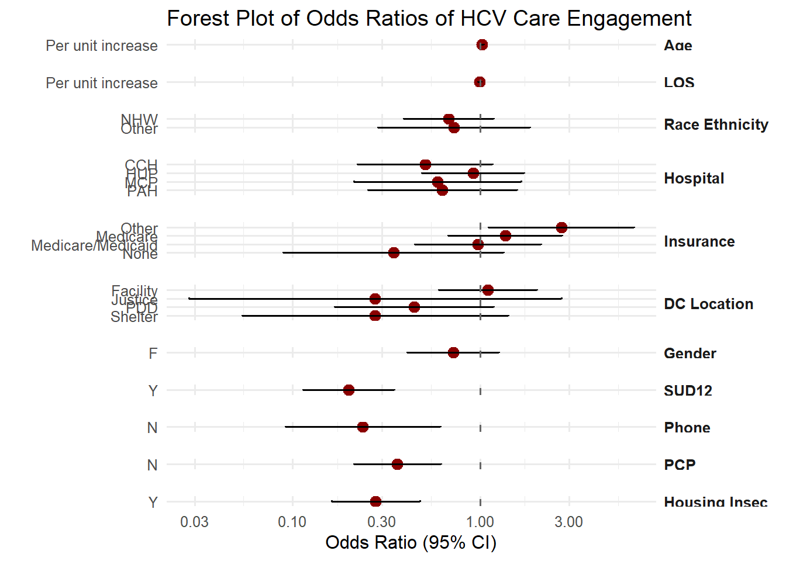
ggsave("forest_plot.pdf", width = 8, height = 10, units = "in")Multivariable Logistic Regression
Creating a full and parsimonious model of associations between factors and successful HCV care engagement
#Creating Multivariable model
library(dplyr) #code breaks without reloading dplyr
df <- HCV_LINKAGE_LINKED_ONLY %>%
mutate(
`Engaged (Y/N)` = factor(`Engaged (Y/N)`, levels = c("N", "Y")),
across(
c(Race_Ethnicity, Hospital, Insurance, DC_Location,
Gender, SUD12, Phone, PCP, Housing_Insec),
factor
)
)
#Fitting the model with variables of interest
cont_vars <- c("Age", "LOS")
cat_vars <- c("Race_Ethnicity", "Hospital", "Insurance", "DC_Location")
bin_vars <- c("Gender", "SUD12", "Phone", "PCP", "Housing_Insec")
exposures <- c(cont_vars, cat_vars, bin_vars)
#Building full model
mv_formula <- as.formula(
paste("`Engaged (Y/N)` ~", paste(exposures, collapse = " + "))
)
mv_mod <- glm(mv_formula, data = df, family = binomial)
summary(mv_mod)
Call:
glm(formula = mv_formula, family = binomial, data = df)
Coefficients:
Estimate Std. Error z value Pr(>|z|)
(Intercept) 2.068531 1.080591 1.914 0.055587 .
Age 0.013713 0.016201 0.846 0.397321
LOS -0.007506 0.013787 -0.544 0.586173
Race_EthnicityNHW -0.264101 0.388384 -0.680 0.496504
Race_EthnicityOther 0.129143 0.575596 0.224 0.822475
HospitalCCH -1.063821 0.526519 -2.020 0.043334 *
HospitalHUP -0.681422 0.400812 -1.700 0.089111 .
HospitalMCP -1.008079 0.650007 -1.551 0.120932
HospitalPAH -0.717330 0.594508 -1.207 0.227588
InsuranceMedicare -1.236325 0.573215 -2.157 0.031019 *
InsuranceMedicare/Medicaid -1.935317 0.606789 -3.189 0.001425 **
InsuranceNone -1.519400 0.871675 -1.743 0.081319 .
InsuranceOther -0.334062 0.604859 -0.552 0.580745
DC_LocationFacility 0.553986 0.414988 1.335 0.181895
DC_LocationJustice -0.769083 1.284471 -0.599 0.549336
DC_LocationPDD -0.108836 0.612605 -0.178 0.858989
DC_LocationShelter -0.889835 0.964994 -0.922 0.356469
GenderF -0.358802 0.353361 -1.015 0.309916
SUD12Y -1.557479 0.454310 -3.428 0.000608 ***
PhoneN -0.988895 0.574468 -1.721 0.085177 .
PCPN -0.381036 0.351519 -1.084 0.278379
Housing_InsecY -0.576964 0.416837 -1.384 0.166313
---
Signif. codes: 0 '***' 0.001 '**' 0.01 '*' 0.05 '.' 0.1 ' ' 1
(Dispersion parameter for binomial family taken to be 1)
Null deviance: 321.19 on 231 degrees of freedom
Residual deviance: 253.26 on 210 degrees of freedom
AIC: 297.26
Number of Fisher Scoring iterations: 4#Table output as interpretable odds ratios
library(broom)
mv_results <- tidy(mv_mod, conf.int = TRUE, exponentiate = TRUE) %>%
filter(term != "(Intercept)") %>%
mutate(
OR = estimate,
CI_low = conf.low,
CI_high = conf.high
) %>%
dplyr::select(term, OR, CI_low, CI_high, p.value)
mv_results #boom# A tibble: 21 × 5
term OR CI_low CI_high p.value
<chr> <dbl> <dbl> <dbl> <dbl>
1 Age 1.01 0.982 1.05 0.397
2 LOS 0.993 0.963 1.02 0.586
3 Race_EthnicityNHW 0.768 0.357 1.65 0.497
4 Race_EthnicityOther 1.14 0.368 3.58 0.822
5 HospitalCCH 0.345 0.120 0.957 0.0433
6 HospitalHUP 0.506 0.227 1.10 0.0891
7 HospitalMCP 0.365 0.0996 1.30 0.121
8 HospitalPAH 0.488 0.150 1.56 0.228
9 InsuranceMedicare 0.290 0.0908 0.869 0.0310
10 InsuranceMedicare/Medicaid 0.144 0.0419 0.458 0.00143
# ℹ 11 more rows#Evaluating collinearity visually as heatmap
#Selecting variables of interest
vars_for_model <- c(
"Age", "LOS",
"Race_Ethnicity", "Hospital", "Insurance", "DC_Location",
"Gender", "SUD12", "Phone", "PCP", "Housing_Insec"
)
#Building design matrix with dummy variables for factors
X <- model.matrix(
as.formula(
paste("~", paste(vars_for_model, collapse = " + "))
),
data = HCV_LINKAGE_LINKED_ONLY
)
#Dropping intercept column
X <- X[, -1, drop = FALSE]
#Computing correlation matrix
cor_mat <- cor(X, use = "pairwise.complete.obs")
#Plotting correlation heatmap
corrplot(
cor_mat,
method = "color",
type = "upper",
order = "hclust",
tl.cex = 0.6, # this changes text size for variable label name
number.cex = 0.4, # this changes text size for correlation coefficient
addCoef.col = "black"
)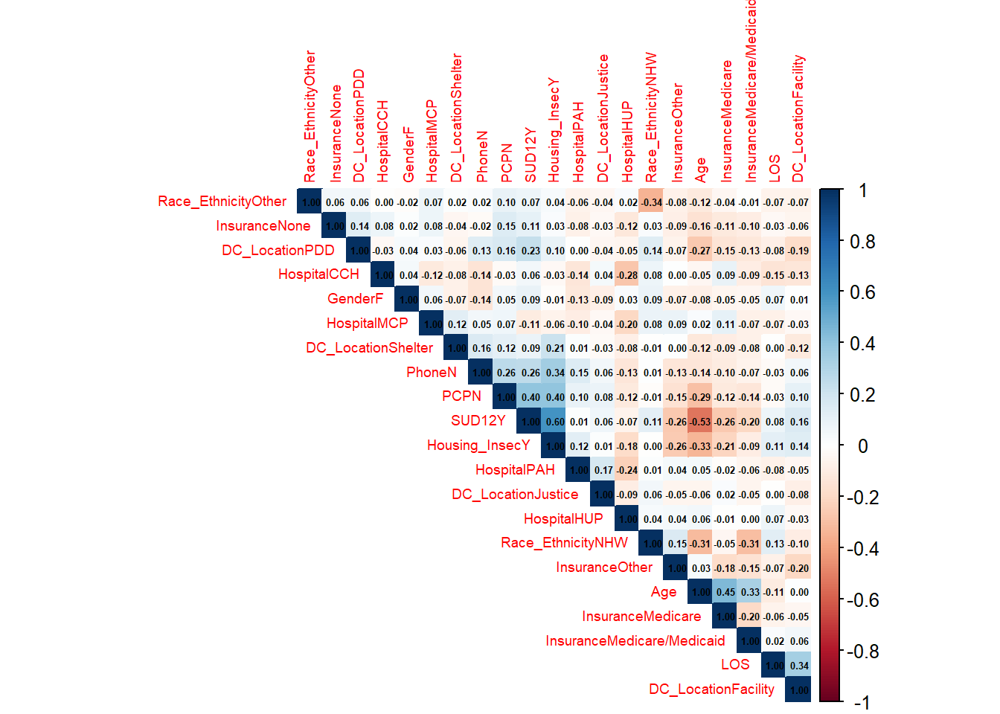
#Creating most parsimonious logistic regression model
mv_mod_full <- glm(mv_formula, data = df, family = binomial)
library(car) #assess for collinearity
vif(mv_mod_full) #VIF <3 generally not a concern; VIF >5 should consider collinearity GVIF Df GVIF^(1/(2*Df))
Age 2.405129 1 1.550848
LOS 1.294264 1 1.137657
Race_Ethnicity 1.470902 2 1.101275
Hospital 1.682232 4 1.067175
Insurance 3.404710 4 1.165494
DC_Location 1.916568 4 1.084715
Gender 1.133875 1 1.064836
SUD12 2.182891 1 1.477461
Phone 1.198143 1 1.094597
PCP 1.289794 1 1.135691
Housing_Insec 1.824773 1 1.350842library(MASS)
Attaching package: 'MASS'The following object is masked from 'package:gtsummary':
selectThe following object is masked from 'package:dplyr':
selectlibrary(dplyr) #reloading library to prevent chunk malfunction
#Generating multivariate model in stepwise manner, using both forward and backward selection. Code will calculate AIC for each model to maximize lowest AIC for a model. Using statistical selection over a priori selection of variables as full model includes all variables plausibly associated with outcome of interest. Future work: LASSO selection over AIC
mv_mod_step <- stepAIC(mv_mod_full, direction = "both", trace = FALSE)
summary(mv_mod_step)
Call:
glm(formula = `Engaged (Y/N)` ~ Age + Hospital + Insurance +
SUD12 + Phone + Housing_Insec, family = binomial, data = df)
Coefficients:
Estimate Std. Error z value Pr(>|z|)
(Intercept) 1.26742 0.87556 1.448 0.14774
Age 0.02297 0.01492 1.540 0.12368
HospitalCCH -1.15065 0.50270 -2.289 0.02208 *
HospitalHUP -0.73814 0.38750 -1.905 0.05680 .
HospitalMCP -1.23611 0.62754 -1.970 0.04887 *
HospitalPAH -0.85719 0.56145 -1.527 0.12682
InsuranceMedicare -1.25410 0.55470 -2.261 0.02377 *
InsuranceMedicare/Medicaid -1.80992 0.57693 -3.137 0.00171 **
InsuranceNone -1.53815 0.84681 -1.816 0.06931 .
InsuranceOther -0.37949 0.57842 -0.656 0.51177
SUD12Y -1.52848 0.43410 -3.521 0.00043 ***
PhoneN -1.01781 0.55511 -1.834 0.06672 .
Housing_InsecY -0.63547 0.39145 -1.623 0.10451
---
Signif. codes: 0 '***' 0.001 '**' 0.01 '*' 0.05 '.' 0.1 ' ' 1
(Dispersion parameter for binomial family taken to be 1)
Null deviance: 321.19 on 231 degrees of freedom
Residual deviance: 260.67 on 219 degrees of freedom
AIC: 286.67
Number of Fisher Scoring iterations: 4anova(mv_mod_full, mv_mod_step, test = "Chisq")Analysis of Deviance Table
Model 1: `Engaged (Y/N)` ~ Age + LOS + Race_Ethnicity + Hospital + Insurance +
DC_Location + Gender + SUD12 + Phone + PCP + Housing_Insec
Model 2: `Engaged (Y/N)` ~ Age + Hospital + Insurance + SUD12 + Phone +
Housing_Insec
Resid. Df Resid. Dev Df Deviance Pr(>Chi)
1 210 253.26
2 219 260.67 -9 -7.4055 0.595#hosmer lemeshow GOF test
library(ResourceSelection)
df$Engaged_num <- ifelse(df$`Engaged (Y/N)` == "Y", 1, 0)
hoslem.test(df$Engaged_num, fitted(mv_mod_step), g = 10) #a Hosmer–Lemeshow test that is non-significant (p>0.05) indicates model fits the observed data well.
Hosmer and Lemeshow goodness of fit (GOF) test
data: df$Engaged_num, fitted(mv_mod_step)
X-squared = 7.1836, df = 8, p-value = 0.517#Creating AUROC
library(pROC)Type 'citation("pROC")' for a citation.
Attaching package: 'pROC'The following objects are masked from 'package:stats':
cov, smooth, varroc_obj <- roc(df$Engaged_num, fitted(mv_mod_step)) #most parsimonious modelSetting levels: control = 0, case = 1Setting direction: controls < casesauc(roc_obj)Area under the curve: 0.7862plot(roc_obj)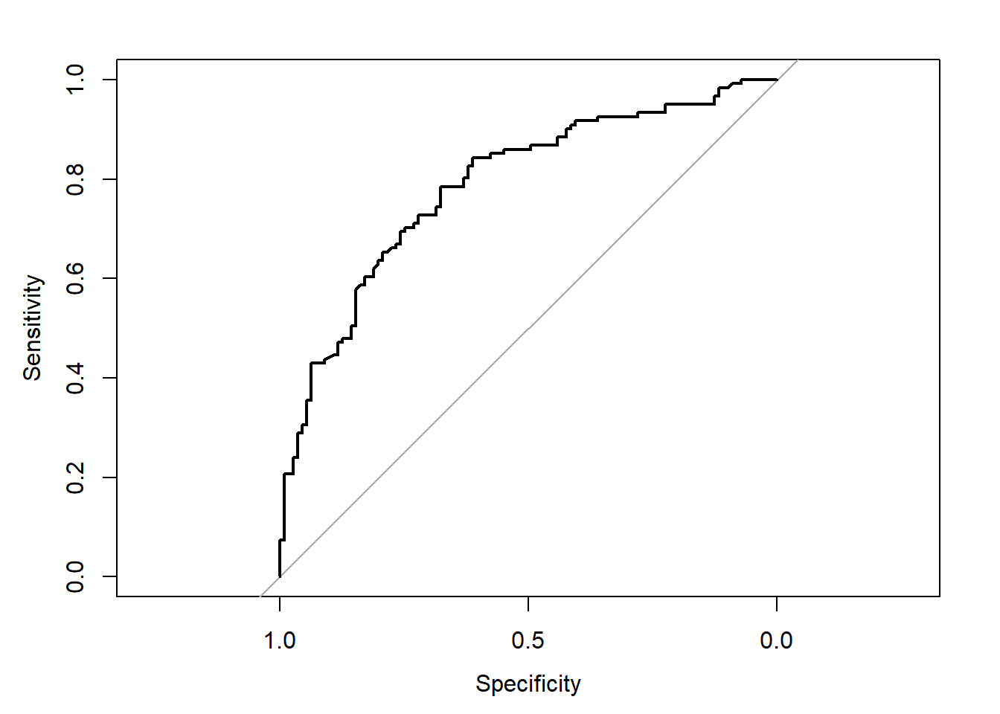
library(broom)
library(dplyr) #RStudio continues to forget this is loaded
#Generate table of odds ratios for both full model (mv_mod_full_reduced) and parsimonious model (mv_mod_step)
mv_results <- tidy(mv_mod_full, conf.int = TRUE, exponentiate = TRUE) %>%
filter(term != "(Intercept)") %>%
mutate(
OR = round(estimate, 2),
CI_low = round(conf.low, 2),
CI_high = round(conf.high, 2),
`OR (95% CI)` = sprintf("%.2f (%.2f, %.2f)", OR, CI_low, CI_high),
`p-value` = ifelse(p.value < 0.001, "<0.001", sprintf("%.3f", p.value))
) %>%
dplyr::select( #calling out dplyr::select needed to excecute code
term,
`OR (95% CI)`,
`p-value`
)
mv_results# A tibble: 21 × 3
term `OR (95% CI)` `p-value`
<chr> <chr> <chr>
1 Age 1.01 (0.98, 1.05) 0.397
2 LOS 0.99 (0.96, 1.02) 0.586
3 Race_EthnicityNHW 0.77 (0.36, 1.65) 0.497
4 Race_EthnicityOther 1.14 (0.37, 3.58) 0.822
5 HospitalCCH 0.35 (0.12, 0.96) 0.043
6 HospitalHUP 0.51 (0.23, 1.10) 0.089
7 HospitalMCP 0.36 (0.10, 1.30) 0.121
8 HospitalPAH 0.49 (0.15, 1.56) 0.228
9 InsuranceMedicare 0.29 (0.09, 0.87) 0.031
10 InsuranceMedicare/Medicaid 0.14 (0.04, 0.46) 0.001
# ℹ 11 more rowsmv_results2 <- tidy(mv_mod_step, conf.int = TRUE, exponentiate = TRUE) %>%
filter(term != "(Intercept)") %>%
mutate(
OR = round(estimate, 2),
CI_low = round(conf.low, 2),
CI_high = round(conf.high, 2),
`OR (95% CI)` = sprintf("%.2f (%.2f, %.2f)", OR, CI_low, CI_high),
`p-value` = ifelse(p.value < 0.001, "<0.001", sprintf("%.3f", p.value))
) %>%
dplyr::select( #calling out dplyr::select needed to excecute code
term,
`OR (95% CI)`,
`p-value`
)
mv_results2# A tibble: 12 × 3
term `OR (95% CI)` `p-value`
<chr> <chr> <chr>
1 Age 1.02 (0.99, 1.05) 0.124
2 HospitalCCH 0.32 (0.12, 0.84) 0.022
3 HospitalHUP 0.48 (0.22, 1.01) 0.057
4 HospitalMCP 0.29 (0.08, 0.99) 0.049
5 HospitalPAH 0.42 (0.14, 1.26) 0.127
6 InsuranceMedicare 0.29 (0.09, 0.82) 0.024
7 InsuranceMedicare/Medicaid 0.16 (0.05, 0.49) 0.002
8 InsuranceNone 0.21 (0.03, 0.99) 0.069
9 InsuranceOther 0.68 (0.22, 2.16) 0.512
10 SUD12Y 0.22 (0.09, 0.50) <0.001
11 PhoneN 0.36 (0.11, 1.03) 0.067
12 Housing_InsecY 0.53 (0.24, 1.14) 0.105 SUMMARY OF RESULTS
During the first 18 months of this default inpatient HCV screening and linkage program, 39,799 unique patients completed HCV screening. Of the 1,241 (3.1%) with a reactive HCV antibody, representing prior or current infection, 330 patients had detectable viremia. Overall, patients with HCV viremia were predominately male (69%), non-Hispanic white (53%), with median age of 56 years (interquartile range [IQR]: 40, 67]). The majority of patients with HCV viremia were insured by Medicaid only (50%) or Medicare only (18%), with few insured by commercial/other plans (10%) or uninsured at time of index hospitalization (8,5%).
The majority of patients with HCV viremia were identified at the Center City hospitals, including 34.2% at PPMC, 31.5% at HUP, and 12.2% at PAH. Of note, while PPMC was the hospital with the largest proportion of patients identified with HCV viremia, it represents only 12.2% of the total bed volume across all hospitals included. Median length of stay for the index hospitalization was 5 days (IQR: 3, 10) days. Most patients were discharged to home (51%); however, 24% were discharged to a different facility and 15% had a patient-directed discharge. Recorded substance use in the prior 12 months was identified in 57% of patients. No primary care provider was identified for 48% of patients. Housing instability was reported in 46% of patients while 16% of patients had no phone number to provide for the medical record.
Geographic distribution of HCV viremia by zip code
Overall, the greatest density of patient count plotted by zip code is centered around the regions of the hospitals included in the analysis. There remain outliers beyond the Center City, Chester County, and Princeton hospital centers, likely reflective patients being referred into care to the quaternary care available within Penn Medicine hospitals. Of note 15% of the zip codes recorded for patients were for the medical center’s address or Prevention Point address, a comprehensive care center for people who inject drugs. Moreover, patients reporting housing instability may have recorded an address for a family member, thus zip codes in this cohort may not be reflective of patient residence.
Care Cascade for HCV Viremic Patients Appropriate for Linkage to Care
Of the 330 patients with HCV viremia, 29 died during the index hospitalization or had a terminal illness and were thus not clinically appropriate for linkage to HCV care. The remaining 301 were included in the HCV care cascade. Of the 301 patients identified with HCV viremia during the index hospitalization, 77% were linked to an HCV treating provider. Patients not linked to care were all considered lost to care. Among the patients lost to care prior to linkage, 47% had a patient-directed discharge at the time of the index hospitalization.
Of the 233 patients linked to care, 121 (52%) attended at least one visit with an HCV-treating provider and were considered engaged in care. One hundred sixteen (96%) of patients who attended at least one visit started HCV treatment. Among those who started HCV treatment, 49 (42%) had documentation of HCV cure, defined as a negative HCV viral load assessed at least 12 weeks after completion of HCV treatment.
Descriptive Time-to-Event for HCV Care
Dates of linkage appointment and HCV treatment initiation were missing or erroneously transcribed in 9 and 30 patients, respectively. Among the 224 patients with recorded linkage appointment date, median time from index hospital admission to first linkage appointment with an HCV treating provider was 29 days (IQR: 17, 47). Among the 86 patients with a documented treatment dispensation date, the median time from index hospitalization to HCV treatment dispensation was 64 days (IQR: 43, 131). Among the 53 patients who returned to care for HCV cure assessment, 49 (92%) achieved cure. Median time from HCV treatment initiation to confirmation of cure was 179 days (IQR: 167, 233), reflective of relatively timely follow-up for cure assessment at least 12 weeks after completed an 8-12 week course of HCV treatment.
Factors Associated with Care Engagement
Among the 301 patients clinically appropriate for HCV care engagement, 121 ultimately engaged in care. To identify factors associated with the binary outcome of care engagement, univariable logistic regression models fit for all baseline characteristics of interest. Two factors were significantly positively associated with care engagement. Increasing age was significantly associated with care engagement (OR: 1.03 [95% CI: 1.01, 1.05]). Patients with other insurance were associated with 2.72-fold increased odds (95% CI: 1.11, 6.64) of care engagement, relative to patients with Medicaid. Four factors were statistically negatively associated with care engagement: active substance use (OR: 0.20 [95% CI: 0.11, 0.35]), not having a phone (0.24 [95% CI: 0.09, 0.62]), not having a primary care provider (OR: 0.36 [0.21, 0.62]), and having housing insecurity (OR: 0.28 [95% CI: 0.16, 0.48]).
As the negatively associated factors with care engagement can co-occur in patient populations, collinearity was explored for all factors using a correlation coefficient heat map. Positive correlation was identified between active substance use and housing instability (correlation coefficient: 0.6) and between housing instability and not having a primary care provider (correlation coefficient: 0.4). A positive correlation was additionally observed between increasing age and Medicare only insurance (correlation coefficient: 0.45). A negative correlation was observed between active substance use and increasing age (correlation coefficient: -0.53).
To identify independent associations between baseline factors and care engagement, a multivariable logistic regression model was fit with all baseline factors of interest. Collinearity was further evaluated by calculating variance inflation factors (VIF). As no factor had a VIF >3.5, all factors were retained in the full model. The full model was used as a starting point for step-wise selection of variables to identify a parsimonious model. Both backwards and forward selection of variables was used to identify the most parsimonious model with the lowest AIC, identified as 286.67 for the logistic regression model including Insurance + active substance use + housing insecurity. The Hosmer-Lemeshow test was not significant (p=0.517), thus the parsimonious model fit the data as well as the full model.
In the final, parsimonious logistic regression model, the strongest factor negatively associated with care engagement was active substance use (OR: 0.22 [95% CI: 0.09, 0.50]; p<0.001). No factors in the final model were significantly positively associated with care engagement. The area under the receiving operator curve was 0.786, demonstrating moderate fit.
DISCUSSION
In this cohort of 330 patients identified with HCV viremia during hospitalization between October 2023 and April 2025, 301 were clinically appropriate for HCV care, of whom 77% were linked to an HCV-treating provider. This high percentage of linkage exceeds that of previous reports from outpatient setting, largely reflective of the captive nature of the audience.(5) Given the median length of stay was five days, this provided the Hepatitis Linkage Team the time needed to contact the patient even prior to hospital discharge to link to care. However, only 52% of patients linked to care attended at least one visit during the study period, drawing attention to the most important gap for patient care and public health. This gap may reflect the challenges with care transitions from hospital discharge to outpatient HCV care engagement. Indeed, the strongest factor independently associated with failure to engage in care was reported active substance use, highlighting an ongoing need to offer co-located care for both HCV and substance use disorder treatment.
While care engagement can be improved with improved outreach and engagement, this inpatient HCV program demonstrated an impressive ability to facilitate treatment initiation once patients were engaged in care. Ninety six percent of patients engaged in HCV care started treatment. While all oral antivirals for HCV treatment have been available since 2014, these patients treated as part of an inpatient screening and linkage program suggest many patients still cannot access HCV treatment through traditional models of care. Inpatient HCV screening and linkage programs can offer a strategy to capture patients through opportunistic screening, while ensuring infrastructure exists to link patients with viremia to life-saving treatment.
Timely access to HCV treatment was additionally demonstrated by this program with patients initiating treatment with a median time of 64 days. This is a stark contrast to recent analysis of a nationally representative cohort of insured individuals in which <30% of patients initiated HCV treatment within one year of diagnosis.(9) These data suggest inpatient HCV screening and linkage teams can additionally expedite time to treatment initiation.
While only 42% of patients treated for HCV returned to care for assessment of cure, this is only slightly lower that the loss to care observed in outpatient cohorts: only 67% of patients with HCV treated in the Veterans Health Administration have completed HCV cure assessment.(10) The lower percentage of patients returning as part of the inpatient program may reflect a population with increased medical complexity and multimorbidity that ultimately hinders ease of subsequent care engagement.
In conclusion, this is the first work evaluating HCV linkage to care among hospitalized patients. It is challenging to directly compare care cascades for ambulatory settings as the patient populations are arguably much different with hospitalized patients having a higher acuity of illness, multiple care transitions to navigate, polypharmacy, and competing medical priorities following hospital discharge. Despite this enrichment of medical complexity, our Penn Medicine HCV Screening and Linkage program achieves a high rate of linkage and treatment initiation for patients ultimately engaged in care, on par or exceeding that reported from community and ambulatory medical settings. Findings from these analyses can inform refinement of navigation strategies to engage patients with factors associated with lower odds of care engagement, including active substance use disorder. Other health systems can consider application of our framework to improve diagnosis and treatment of people with HCV in their community.
REFERENCES
- Kim HS, Yang JD, El-Serag HB, Kanwal F. Awareness of chronic viral hepatitis in the United States: An update from the National Health and Nutrition Examination Survey. J Viral Hepat. 2019;26(5):596-602.
- Owens DK, Davidson KW, Krist AH, Barry MJ, Cabana M, Caughey AB, et al. Screening for Hepatitis C Virus Infection in Adolescents and Adults: US Preventive Services Task Force Recommendation Statement. Jama. 2020;323(10):970-5.
- Schillie S, Wester C, Osborne M, Wesolowski L, Ryerson AB. CDC Recommendations for Hepatitis C Screening Among Adults - United States, 2020. MMWR Recomm Rep. 2020;69(2):1-17.
- Lo Re V, 3rd, Bhattacharya D, Price JC, Aronsohn A, Kim HN, Falade-Nwulia O, et al. State-of-the-Art Review: Hepatitis C. Clin Infect Dis. 2025;81(2):e15-e26.
- Yehia BR, Schranz AJ, Umscheid CA, Lo Re V, 3rd. The treatment cascade for chronic hepatitis C virus infection in the United States: a systematic review and meta-analysis. PLoS One. 2014;9(7):e101554.
- Mehta SJ, Torgersen J, Small DS, Mallozzi CP, McGreevey JD, 3rd, Rareshide CAL, et al. Effect of a Default Order vs an Alert in the Electronic Health Record on Hepatitis C Virus Screening Among Hospitalized Patients: A Stepped-Wedge Randomized Clinical Trial. JAMA Netw Open. 2022;5(3):e222427.
- Harris PA, Taylor R, Minor BL, Elliott V, Fernandez M, O’Neal L, et al. The REDCap consortium: Building an international community of software platform partners. J Biomed Inform. 2019;95:103208.
- Harris PA, Taylor R, Thielke R, Payne J, Gonzalez N, Conde JG. Research electronic data capture (REDCap)–a metadata-driven methodology and workflow process for providing translational research informatics support. J Biomed Inform. 2009;42(2):377-81.
- Thompson WW, Symum H, Sandul A, Gupta N, Patel P, Nelson N, et al. Vital Signs: Hepatitis C Treatment Among Insured Adults - United States, 2019-2020. MMWR Morb Mortal Wkly Rep. 2022;71(32):1011-7.
- Torgersen J, Newcomb CW, Carbonari DM, Rentsch CT, Park LS, Mezochow A, et al. Protease inhibitor-based direct-acting antivirals are associated with increased risk of aminotransferase elevations but not hepatic dysfunction or decompensation. J Hepatol. 2021;75(6):1312-22.